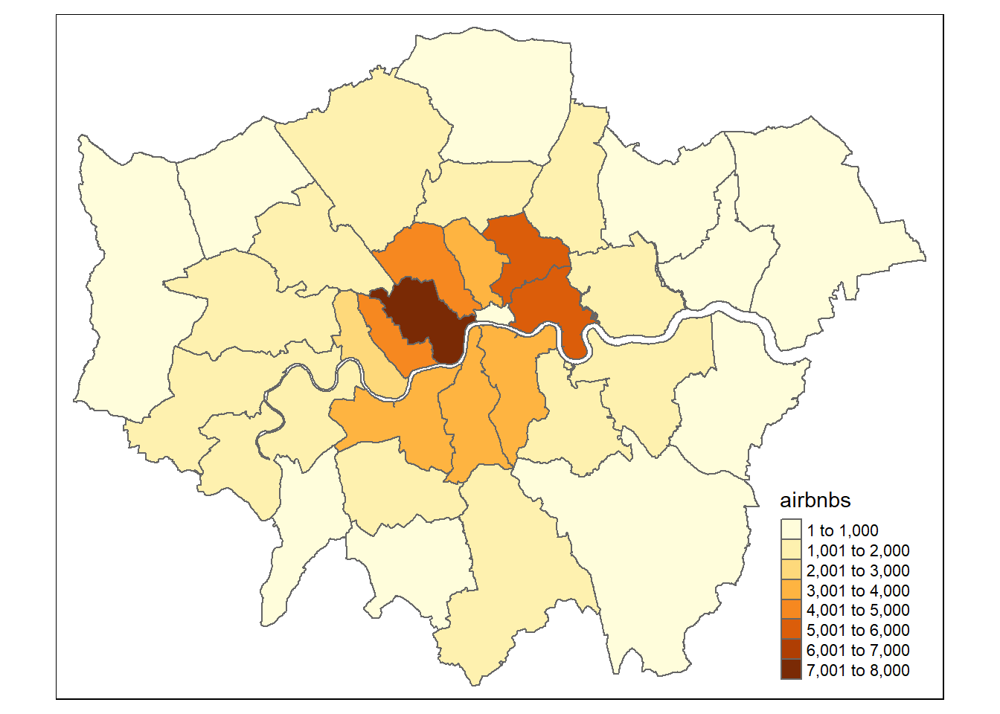
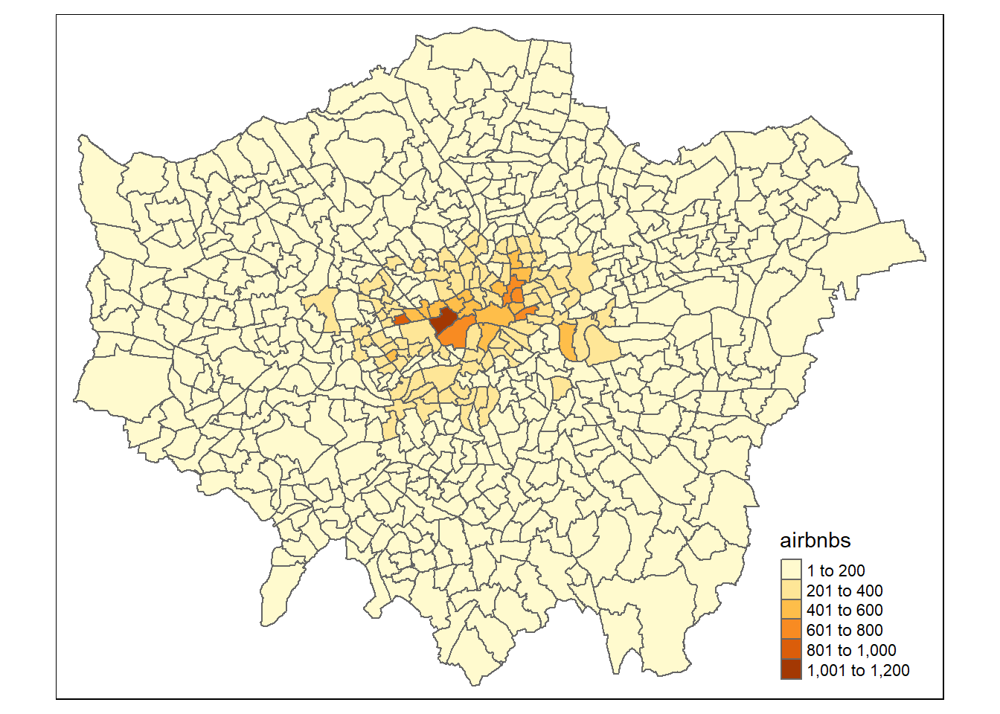
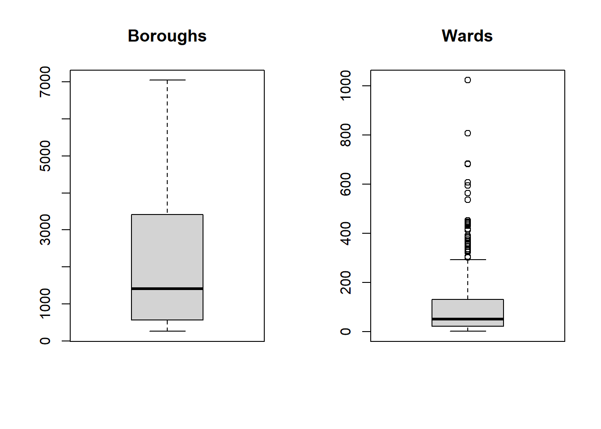
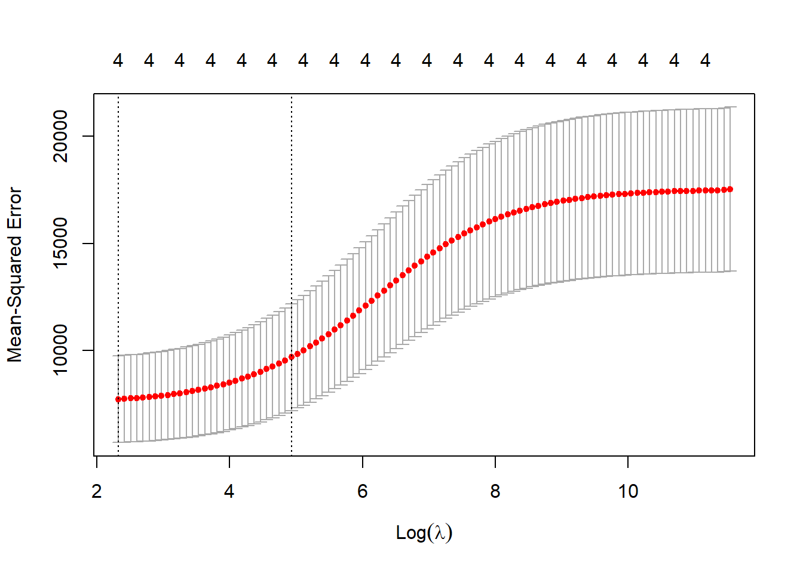
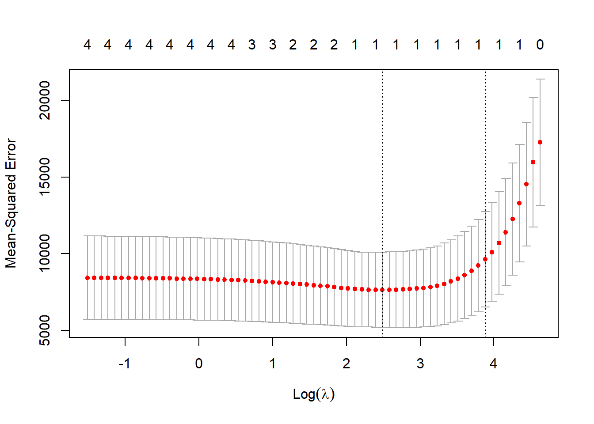

Chapter 10 Advanced R, MAUP and more regression
10.1 Learning outcomes
- Describe, explain and visualise the MAUP problem
- Design and use loops and functions
- Execute linear, Ridge and LASSO regression to predict values (e.g. future or missing)
- Critically evaluate different regression approaches
10.2 Homework
Outside of our schedulded sessions you should be doing around 12 hours of extra study per week. Feel free to follow your own GIS interests, but good places to start include the following:
Assignment
From weeks 10 until the assignment deadline, undertake your analysis, then write up your discussion and conclusion (that includes recommendations).
Before submission
Check that your assignment follows the standard model of scientific investigation. You may need to update your introduction and literature review based on the analysis you undertook to ensure a seamless narrative throughout.
Reading This week:
For advanced R coding Chapter 5 “Control flow” from Advacned R by Hadley Wickham.
For more advanced R inclduing functions Chapter 10 “Scripts, algorithms and functions” from Geocomputation with R by Lovelace, Nowosad and Muenchow (2020).
For Ridge and LASSO regression Chapter 4 “Linear models III: shrinkage, multivariate response, and big data” from Predictive Modeling by Portugués (2020).
Remember this is just a starting point, explore the reading list, practical and lecture for more ideas.
10.3 Recommended listening 🎧
Some of these practicals are long, take regular breaks and have a listen to some of our fav tunes each week.
Adam6 letters: LSB, DRS. Oh yes!
10.4 Introduction
The Modifiable Areal Unit Problem (MAUP) represents the related effects of scale and aggregation on all geographic data and analysis. It was first deomstrated by the geographer Stan Openshaw in 1984 who showed that as you aggregated results to diffrent spatial units the reults could be manipulated to show different outcomes. Throughout this practical book we’ve considered London boroughs, but would any of the results change if we considered the data at ward level? Are we hiding any trends because we have just used the borough data that summed all of the wards within the borough? It’s important to consider what is the most appropriate spatial unit for your analysis and provide appropriate reasoning. Even this is pretty straightforward (e.g. the data was only provided at the borough level) you must contextualise this and describe any potential limitations of it. In this practical i will firstly demonstrate the MAUP in action using some more advanced R code. Then we will have a look at some techniques to model and validate data.
Here we will be using London brough and ward data from practical 1. As we’re getting better with R, we will try to automate almost everthing — meaning that if you gave this code to someone else they could just run it without any data files and generate the same result. The only thing we won’t automate later on is loading an excel file… i did find a function online that would let us read it from the interweb but it was more hassle than it was worth. I don’t know why the data isn’t just also distributed as a .csv.
10.5 MAUP
10.5.1 Get the data
- Download and unzip the London statistical gis boundaries.
# make a temp file to store the .zip in
download.file("https://data.london.gov.uk/download/statistical-gis-boundary-files-london/9ba8c833-6370-4b11-abdc-314aa020d5e0/statistical-gis-boundaries-london.zip",
destfile="prac10_data/statistical-gis-boundaries-london.zip")library(tidyverse)
library(fs)
listfiles<-dir_info(here::here("prac10_data")) %>%
dplyr::filter(str_detect(path, "statistical-gis-boundaries-london.zip")) %>%
dplyr::select(path)%>%
pull()%>%
#print out the .gz file
print()%>%
as.character()%>%
utils::unzip(exdir=here::here("prac10_data"))## C:/Users/Andy/OneDrive - University College London/Teaching/CASA0005/2020_2021/CASA0005repo/prac10_data/statistical-gis-boundaries-london.zipUsing a recent update we could also change this a bit with the pins() package that downloads and caches the url and automatically checks for file changes, only re-downloading if needed!
library(pins)
pinexample<-pins::pin("https://data.london.gov.uk/download/statistical-gis-boundary-files-london/9ba8c833-6370-4b11-abdc-314aa020d5e0/statistical-gis-boundaries-london.zip")pins() also lets you share data easily, have a look the RStudio pins blog post for more information.
- Take the downloaded data and filter it based on the filename that contains: Borough OR Ward_ AND
.shpusinggrepl()
boroughsandwards<-dir_info(here::here("prac9_data",
"statistical-gis-boundaries-london",
"ESRI"))%>%
#$ means exact match
dplyr::filter(str_detect(path,
"London_Ward_CityMerged.shp$|London_Borough_Excluding_MHW.shp$"))%>%
dplyr::select(path)%>%
pull()- Now read in both of the files using
map()that applies a function (herest_read()from thesfpackage) to a list.map()comes from thepurrrpackage which extends R’s functional programming ability.
library(sf)
boroughsandwardssf<-map(boroughsandwards, st_read)## Reading layer `London_Borough_Excluding_MHW' from data source
## `C:\Users\Andy\OneDrive - University College London\Teaching\CASA0005\2020_2021\CASA0005repo\prac9_data\statistical-gis-boundaries-london\ESRI\London_Borough_Excluding_MHW.shp'
## using driver `ESRI Shapefile'
## Simple feature collection with 33 features and 7 fields
## Geometry type: MULTIPOLYGON
## Dimension: XY
## Bounding box: xmin: 503568.2 ymin: 155850.8 xmax: 561957.5 ymax: 200933.9
## Projected CRS: OSGB 1936 / British National Grid
## Reading layer `London_Ward_CityMerged' from data source
## `C:\Users\Andy\OneDrive - University College London\Teaching\CASA0005\2020_2021\CASA0005repo\prac9_data\statistical-gis-boundaries-london\ESRI\London_Ward_CityMerged.shp'
## using driver `ESRI Shapefile'
## Simple feature collection with 625 features and 7 fields
## Geometry type: POLYGON
## Dimension: XY
## Bounding box: xmin: 503568.2 ymin: 155850.8 xmax: 561957.5 ymax: 200933.9
## Projected CRS: OSGB 1936 / British National GridTo map or access each individual shapefile it’s just…
library(tmap)
tmap_mode("plot")
qtm(boroughsandwardssf[[2]]) 
# or change to 1 - Get the data for Airbnb
Airbnb <- read_csv("http://data.insideairbnb.com/united-kingdom/england/london/2022-03-09/data/listings.csv.gz")- And for OSM we’ll download it from geofabrik, you can also use the OSM Application Programming Interface (API) but there is a limit on the number of points downloadable per call so you’d have to do something a bit more complicated to get the whole of London…however, I have provided an example of the api call.
library(memisc)
download.file("http://download.geofabrik.de/europe/great-britain/england/greater-london-latest-free.shp.zip",
mode='wb',
destfile="prac10_data/geofabrik.zip")
listfiles<-dir_info(here::here("prac10_data")) %>%
dplyr::filter(str_detect(path, "geofabrik.zip")) %>%
dplyr::select(path)%>%
pull()%>%
#print out the .gz file
print()%>%
as.character()%>%
utils::unzip(exdir=here::here("prac10_data", "geofabrik"))Example of using the API….
library(osmar)
src <- osmsource_api(url = "https://api.openstreetmap.org/api/0.6/")
# 1000 refers to distance from centre point
bb <- center_bbox(-0.112510,51.507627, 1000, 1000)
LDN <- get_osm(bb, source = src)
plot(LDN)
# extract just highwways
ways <- find(LDN, way(tags(k == "highway")))
hway <- find_down(LDN, way(ways))
hway <- subset(LDN, ids = hway)10.5.2 Project the data
- Next up we need to project our
.shpdata …we could project our data individually using:
st_transform(boroughsandwardssf[[1]], 27700)
st_transform(boroughsandwardssf[[2]], 27700)or use map() again…
boroughsandwardssf<- map(boroughsandwardssf, crs=27700, st_transform)
# change the airbnb data to spatial
Airbnb <- Airbnb %>%
st_as_sf(., coords = c("longitude", "latitude"),
crs = 4326)%>%
# project it too - remember that 27700 is
# British National Grid
st_transform(., 27700)10.5.3 Functions
- Now remember our function we made for joining our Airbnb data (or Hotels) to the London boroughs layer… let’s make the function again…
Joinfun <- function(data1, data2){
output<- data1%>%
st_join(data2,.)%>%
add_count(GSS_CODE, name="airbnbs")
return(output)
}10.5.4 Loops
- Ok, but we want to get a count of Airbnb points per London ward and Borough…how can we do that?…well manually of course…like this…
Airbnbborough <- Joinfun(Airbnb, boroughsandwardssf[[1]])
Airbnbward <- Joinfun(Airbnb, boroughsandwardssf[[2]])But we can also automate this using a loop (either a while or for loop). I’ve used a while loop here as when i did my MSc you weren’t able to put a for loop inside a for loop. I beleive that has now changed but because of that one day i had to spend changing everything i always default to using a while loop.
Tell us what a loop is already?
A loop let’s you go over something adding 1 (or any value) each time…for example let’s look a basic loop. You need to run everything in the loop at once from the while to the }. If you make just a normal Rscript you can set breakpoints — the code will the stop each time it hits the breakpoint within the loop. You can’t do this at the moment with RMarkdown code chunks, i normally develop the loop outside of it looping then put it all together.
# set up a variable
basicloop <- 1
# so while our variable is less than
#6 run the following code within the {}
while (basicloop < 6) {
#print the varaible (starts at 1)
print(basicloop)
# then add 1 to the variable
basicloop = basicloop+1
# go back to the start of the loop
#and if it is still <6 run again
}## [1] 1
## [1] 2
## [1] 3
## [1] 4
## [1] 5That loop outputs the values of 1-5, as we started with a value of 1, then added 1 to make 2. It remained below 6 so the code ran again printing the 2 then added 1 again to make 3 and so on. As we specified less than 6 it stopped there..
We can also save these results to diffrent variables but we need to make a list (or dataframe/ whatever you need) to start with to save them in
# here is my empty list
emptylist <- list()
basicloop <- 1
while (basicloop < 6) {
print(basicloop)
emptylist[[basicloop]] <- basicloop
basicloop <- basicloop+1
}## [1] 1
## [1] 2
## [1] 3
## [1] 4
## [1] 5Here we are using the variable basicloop to index our emptylist.. so everytime we add 1 it changes the index value….have a look what i mean…
emptylist## [[1]]
## [1] 1
##
## [[2]]
## [1] 2
##
## [[3]]
## [1] 3
##
## [[4]]
## [1] 4
##
## [[5]]
## [1] 5emptylist[[1]]## [1] 1emptylist[[2]]## [1] 2Right, so how are we going to apply this to our data. We have two .shp files (boroughs and wards) in a list that we want to apply our function to..
Firstly let’s set up the length to stop at, make an empty list and a starting point. As our data is in a list we just want the length of that (as a number)..
# get the length - add 1 as we are using less than
boroughlen<-length(boroughsandwardssf)+1
# empty list
hold<-list()
# here is our starting point variable
i<-1Now here is the loop..
# while i is less than boroughlength
# max of boroughlength is 3
while (i < boroughlen){
# put the output in our varible
# use the function for boroughs and then wards
hold[[i]] <- Joinfun(Airbnb, boroughsandwardssf[[i]])
# add one to the index
i<-i+1
}
# make a quick thematic map to have a look
justairbnbborough<-hold[[1]]%>%
dplyr::select(GSS_CODE, airbnbs)%>%
st_drop_geometry()%>%
distinct(GSS_CODE, airbnbs)%>%
left_join(boroughsandwardssf[[1]], .,
by = c("GSS_CODE" = "GSS_CODE"))
justairbnward<-hold[[2]]%>%
dplyr::select(GSS_CODE, airbnbs)%>%
st_drop_geometry()%>%
distinct(GSS_CODE, airbnbs)%>%
left_join(boroughsandwardssf[[2]], .,
by = c("GSS_CODE" = "GSS_CODE"))
qtm(justairbnbborough, fill = "airbnbs")
qtm(justairbnward, fill = "airbnbs")
When should i use a loop?
Well that’s a hard question…generally loops used to be considered inefficient in R, but i’m yet to come across a method that will let you increment one varibale whilst keeping another consistent …by this i mean like what we did in our loop. We changed what spatial data was joined with the Airbnb data — the Airbnb data remained the same. There are a few other functions like mapply(), sapply() and tapply() that work in the same format as lapply() but to my knowledge they still will increment all of the variables at the same time.
In terms of code clarity i’m going to refer to section 21.5 on iteration in Wickham $ Grolemund (2017)…
“Some people will tell you to avoid for loops because they are slow. They’re wrong! (Well at least they’re rather out of date, as for loops haven’t been slow for many years). The chief benefits of using ‘other functions’ is not speed, but clarity: they make your code easier to write and to read”.
That said, within this course you are not marked on how ‘good’ or ‘efficient’ your code is. Sure, i want you to write great code, but if you are writing code for your assigment or any future project really, my advice is the same. Get something that works and addresses the mark scheme (read the mark scheme!) and then if you have time, improve it later on. There is also a section later on about writing advanced code in the assignment.
10.5.5 Advanced mapping (again)
- Right, so we can sort of see the difference between the spatial levels (boroughs and wards) but let’s take a closer look within Westminster… here is the ‘preamble’ for the
leafletmap …basically all the stuff we need to set it up…
library(classInt)
library(leaflet)
library(leafpop)
# extract only westminster from boroughs
Borough <- hold[[1]] %>%
filter(NAME=="Westminster")%>%
# we need to set the projection to WGS84
# to use with leaflet
st_transform(., crs=4326)%>%
#at the moment each airbnb is a row for the borough
#we just one one row that has number of airbnbs
group_by(., GSS_CODE, NAME)%>%
summarise(airbnbs = unique(airbnbs))
wardsatborough <- hold[[2]] %>%
filter(BOROUGH=="Westminster")%>%
# we need to set the projection to WGS84
# to use with leaflet
st_transform(., crs=4326)%>%
#at the moment each airbnb is a row for the wards
#we just one one row that has number of airbnbs
group_by(., GSS_CODE, NAME)%>%
summarise(airbnbs = unique(airbnbs))
# set our breaks for the map
breaks1<-classIntervals(hold[[1]]$airbnbs,
n=5,
style = "quantile")
breaks2<-classIntervals(wardsatborough$airbnbs,
n=5,
style = "quantile")
# use the breaks to set our colour palettes
pal <- colorBin(palette = "YlOrRd",
domain=hold[[1]]$airbnbs,
bins=breaks1$brks)
pal2 <- colorBin(palette = "YlOrRd",
domain=wardsatborough$airbnbs,
bins=breaks2$brks)
# we want a popup of information too
# here we make a new varaible with no
#spatial info (remove geometry)
wardinfo <-wardsatborough %>%
st_drop_geometry()%>%
dplyr::rename(Ward = NAME,
Airbnbs = airbnbs)%>%
dplyr::select(Ward, Airbnbs)%>%
popupTable()
boroughinfo <-wardsatborough %>%
st_drop_geometry()%>%
dplyr::rename(Borough = NAME,
Airbnbs = airbnbs)%>%
dplyr::select(Borough, Airbnbs)%>%
popupTable()- Now let’s map it using what we just specified… i’ve added a few more features than were in the Map making practical
wardandboroughs<- leaflet() %>%
# add basemap options
addProviderTiles(providers$Stamen.TonerLite, group = "Toner Lite") %>%
addTiles(group = "OSM") %>%
#add our Borough polygons, linking to the tables we just made
addPolygons(data=Borough,
color="white",
weight = 2,
opacity = 1,
dashArray = "3",
fillOpacity = 0.7,
popup = boroughinfo,
fillColor = ~pal(Borough$airbnbs),
group = "Borough")%>%
#add our ward polygons, linking to the tables we just made
addPolygons(data=wardsatborough,
color="white",
weight = 2,
opacity = 1,
dashArray = "3",
fillOpacity = 0.7,
popup = wardinfo,
fillColor = ~pal2(wardsatborough$airbnbs),
group = "Wards")%>%
# add a legend for wards
addLegend(pal = pal2,
values = wardsatborough$airbnbs,
group=c("Wards"),
position ="bottomleft",
title ="Accom count")%>%
# add a legend for boroughs
addLegend(pal = pal,
values = Borough,
group=c("Borough"),
title ="Accom count",
position ="bottomleft")%>%
# specify layers control
addLayersControl(
baseGroups = c("Toner Lite", "OSM"),
overlayGroups = c("Borough", "Wards"),
options = layersControlOptions(collapsed = FALSE))%>%
hideGroup(c("Borough"))
# show us the map
wardandboroughsHave a look around the map…Westminster borough uses a scale considering all other London borough values, whilst the ward scale is specific to Westminster. Use the following code to explore the values…
# range of Airbnbs per ward in Westminster
Range<-wardsatborough %>%
summarise(Max = max(airbnbs),
Min = min (airbnbs))10.6 Regression relationships
Warning The data used within this practical is purely for demonstration purposes!
10.6.1 Preprocessing
In this part of the practical we’re going to try and model the relationship between the Airbnb counts at ward level and other variables. Our mini investagion here would be to see if it’s possible to produce a statisitcally valid and rigorous model for predicting Airbnb values at the ward level. This type of analysis might be useful if you had missing or limited data at one spatial level (e.g. wards) but had a more complete dataset at a larger spatial scale (e.g. boroughs). Essentially, we’re trying to use the data at the borough level to give us an estiamte of the data at the ward level. Obviously this isn’t an issue for us here but if you ever use survey data or any kind of count data (e.g. health) if may well be limited to specific areas…
This section will also show you how to make/ use different regression models in R. Regression aims to find a mathematical equation to predict a value (in this case Airbnb at ward level) from one (or more) predictor variables (e.g. borough data). So we’ll use values of X (borough data) to predict values of Y (ward data)…

This can be represented with the equation:
\[Y = \beta_{1} + \beta_{2} X + \epsilon\] Where \(\beta_{1}\) is the intercept (expected value of Y when X=0, also called bias in machine learning), \(\beta_{2}\) is the slope of the line and \(\epsilon\) is the error term, the part that the model is unable to explain (and variables are not included)…Here we would call the intercept and slop coefficients.
- To start with we’re going to crop our wards data to our boroughs data. In the borough data you can see the river Thames which isn’t in the wards data. I don’t think this is technically required, but it’s good practice to make sure you datasets align and if they don’t to do something about it…
library(tmaptools)
cropped <- justairbnbborough %>%
crop_shape(justairbnward,., polygon = TRUE)
# something like this would just extract the
# values within the shape, but not clip like a cookie cutter
# we want to use the borough layer to cut out the river from
# the wards layer
###test <- hold[[2]][hold[[1]],]
# check it worked, you should be
#able to see the river
plot(st_geometry(cropped))
- Now we need to join our wards data and borough data togther to give us a borough value for each ward within…
# join wards and boroughs
joined <- justairbnbborough %>%
st_join(., justairbnward, join=st_contains)%>%
rename(., Boroughcount = airbnbs.x,
Wardcount = airbnbs.y)10.6.2 Scatter plot
- To start with let’s just visualise the relationship between the borough an ward count using a scatter plot. If you have multiple predictor variables (explied later on) a plot will be drawn for each of them…
p <- ggplot(joined, aes(Boroughcount, Wardcount))+
geom_point()+
xlab("Borough count")+
ylab("Ward count")The scatter plot shows some kind of linear relationship. The point variation around borough count is beacuse for each borough the wards will have a range of values…like we saw in the interactive map…Westminster borough had a value of 9410 and the wards ranged from 159 to 1215
10.6.3 Outliers
- Generally any point that is outside 1.5* the interquartile-range (or IQR) is considered an outlier (a data point that differs significantly from all others) and you could use something like the methods here to remove and replace them…the IQR is the distance between the 25th and 75th percentile..
par(mfrow=c(1, 2)) # divide graph area in 2 columns
boxplot(joined$Boroughcount, main="Boroughs")
boxplot(joined$Wardcount, main="Wards")
Warning The data used within this practical is purely for demonstration purposes! These box plots indicate that our data is not normally distributed so you might want to refer to the assumptions in last week’s practical if you were to do this propperly.
10.6.4 Correlation
- Correlation let’s use see the level of linear dependence between two varaibles between -1 and 1. High values (towards 1) mean that for every x instance there is an increase in y. Low values (towards -1) mean the opposite.
library(corrr)
Correlation <- joined %>%
st_drop_geometry()%>%
dplyr::select(Boroughcount,
Wardcount)%>%
correlate() %>%
print()## # A tibble: 2 × 3
## term Boroughcount Wardcount
## <chr> <dbl> <dbl>
## 1 Boroughcount NA 0.780
## 2 Wardcount 0.780 NA- Looks, like we’ve got a strong relationship.
10.6.5 Linear model
- Now let’s use a linear model to establish a relationship between predictor and response with the function
lm(). Here we are calling thelm()(then stating the Formula, then the data)
library(broom)
linearMod <- lm(Wardcount ~
Boroughcount,
data=joined)
tidy(linearMod)## # A tibble: 2 × 5
## term estimate std.error statistic p.value
## <chr> <dbl> <dbl> <dbl> <dbl>
## 1 (Intercept) -7.86 4.86 -1.62 1.07e- 1
## 2 Boroughcount 0.0543 0.00185 29.3 1.40e-114So from this output we have the coefficients of intercept and Boroughcount, going back to our formula from earlier this would mean…
\[Wardcount = -3.8188 + 0.0541*Boroughcount\]
10.6.6 Linear model outputs
Coefficient Estimates
Our intercept, the expected value of Y when X=0 is -3.8 and slope is 0.054.
Standard error
The coefficient standard error represents the average amount that coeffieint estimates vary from the average of our response. It basically shows the expected range if we were to model again and again. So here, for a 1% increase in the number of Airbnbs per ward by 0.05, but this might vary by 0.001. Ideally the standard error is lower than the size of the coeffeicient (0.001 is lower the 0.05)
p-value
A linear model is only statistically significant when both p-values are <0.05 within the summary call. There are two values as one if for the coefficient (is the specific coefficient significant) and the other is for the model (is the model significant). Here as they both are, this would allow us to accept the alternative hypothesis that the coefficients are not equal to 0 (and therefore there is a relationship between the independent and dependent variabile).
R-squared
R squared represents the proportion of variance of the dependent variable that is explained by the independent. It is different from correlation as that is the strength of the relationship!!! R squared is often referred to as ‘goodness-of-fit’. Here 61% of the variance in Airbnb ward count can be explained by the varaition in Airbnb borough count.
But there are a few issues with R squared — every time you add a predictor to the model R squared will increase and if there are too many predictors it will model random noise
Adjusted R squared
Adjusted R squared consideres the number of variables within the model, increasing only if the new term assits by more than just chance.
t
Coefficient t shows how many standard deviations the coefficient estaimte is away from 0 — the further away means the more likely we can reject the null hypothesis. It is calcaulted by dividing the value of the coeffeicient by the standard error
Residual error
Residual standard error is a measure of the quality of fit of the linear regression line. It is an average of the error that the points differ out from the line.
F
F-statistcs, basically, the futher from 1 the better it is.
See this guide for more information on the outputs
Remember the formula produced from the regression equation, well we can also extract this automatically …to make that original formula in RMarkdown I used this (not within a code chunk)….
$$Wardcount = -3.8188 + 0.0541*Boroughcount$$But we can also extract it directly using a new package from GitHub…
# load remotes so we can get the new package
library(remotes)# get the new package equatiomatic()
remotes::install_github("datalorax/equatiomatic")# load it
library(equatiomatic)
# extract the info to make the equation
extract_eq(linearMod)\[ \operatorname{Wardcount} = \alpha + \beta_{1}(\operatorname{Boroughcount}) + \epsilon \]
Play around with line length and use the actual coefficient names
extract_eq(linearMod, use_coefs = TRUE, wrap=TRUE, terms_per_line = 2)\[ \begin{aligned} \operatorname{\widehat{Wardcount}} &= -7.86 + 0.05(\operatorname{Boroughcount}) \end{aligned} \]
This would produce the following in RMarkdown….
\[ \begin{aligned} \text{Wardcount} &= -3.82 + 0.05(\text{Boroughcount})\ + \\ &\quad \epsilon \end{aligned} \]
Have a look here for more information on using equatiomatic().
10.6.7 Validation
- We’ve made a regression model using all of our data but there is now no way to test its validity…what if we take 20% as a test sample and use the remaining 80% to train it…
joinedID <- joined %>%
st_drop_geometry()%>%
mutate(Wardcount = replace_na(Wardcount, 0))%>%
mutate(id = row_number())
# Create training 80% index
train <- joinedID %>%
sample_frac(.70)
# Create test set
test <- anti_join(joinedID,
train,
by = 'id')Now let’s build the model…
# build the model
lmMod <- lm(Wardcount ~ Boroughcount,
data=train)
# use the model to make some predicitons with our test data
library(caret)
predictions <- lmMod %>%
predict(test)
# get R2, RMSE and MAE
stats<-data.frame(R2 = R2(predictions, test$Wardcount),
RMSE = RMSE(predictions, test$Wardcount),
MAE = MAE(predictions, test$Wardcount))
t## $type
## [1] "lag"
##
## $dvars
## [1] 3 0
##
## $rho
## rho
## 0.00515683
##
## $coefficients
## (Intercept)
## 202.34273
## unauthorised_absence_in_all_schools_percent_2013
## -36.17560
## log(median_house_price_2014)
## 12.58783
##
## $rest.se
## (Intercept)
## 20.098676
## unauthorised_absence_in_all_schools_percent_2013
## 1.913596
## log(median_house_price_2014)
## 1.532730
##
## $LL
## [,1]
## [1,] -2603.509
##
## $s2
## [1] 239.8558
##
## $SSE
## [1] 150149.8
##
## $parameters
## [1] 5
##
## $logLik_lm.model
## 'log Lik.' -2603.74 (df=4)
##
## $AIC_lm.model
## [1] 5215.479
##
## $method
## [1] "eigen"
##
## $call
## lagsarlm(formula = average_gcse_capped_point_scores_2014 ~ unauthorised_absence_in_all_schools_percent_2013 +
## log(median_house_price_2014), data = LonWardProfiles, listw = nb2listw(LWard_nb,
## style = "C"), method = "eigen")
##
## $residuals
## 1 2 3 4 5 6
## -11.73596188 -0.63367392 -4.47433117 1.05446013 29.15335285 2.24902862
## 7 8 9 10 11 12
## -26.04107211 17.49757641 6.20390185 -11.27659527 -20.34103735 21.22211842
## 13 14 15 16 17 18
## -5.23278885 20.80499949 5.52027405 27.02634870 3.05977914 1.05963172
## 19 20 21 22 23 24
## 13.00380955 -1.31276626 6.02027518 14.49871272 10.08022960 -5.01419859
## 25 26 27 28 29 30
## 11.25844001 8.18449918 8.39518643 -0.97833562 1.35512117 5.84356494
## 31 32 33 34 35 36
## 24.36933763 -13.28311774 -7.71192814 15.62712259 -4.70575162 -14.18589368
## 37 38 39 40 41 42
## -11.74168137 3.14444057 6.02401011 9.05385707 13.00023605 5.86640792
## 43 44 45 46 47 48
## 5.77720242 26.77569553 -12.53706722 12.28006770 0.39409040 2.13279085
## 49 50 51 52 53 54
## 14.55879605 23.63618774 -3.10838711 12.50485863 13.35240463 -23.41062118
## 55 56 57 58 59 60
## -0.17617091 4.32527534 0.94332276 1.88269173 -2.33442524 0.90872880
## 61 62 63 64 65 66
## -10.22774422 -1.45359853 5.62429294 -13.42480188 2.35698770 -7.08197093
## 67 68 69 70 71 72
## 4.15516674 12.65958747 34.68404506 0.81886559 -8.17850936 -2.12733278
## 73 74 75 76 77 78
## -3.78843487 4.49161244 26.43232854 13.28627188 16.62704835 16.41800806
## 79 80 81 82 83 84
## -3.13749891 24.49842989 4.87497974 7.48232527 -12.26161561 -14.23783225
## 85 86 87 88 89 90
## 0.49204980 -27.38220170 -9.41819058 -9.09676623 19.04159349 -14.26257866
## 91 92 93 94 95 96
## -5.14806595 -18.09914157 18.10471774 4.49869983 -23.81521703 -5.39536194
## 97 98 99 100 101 102
## -1.13169931 -12.27866617 3.10485601 7.88675828 10.29082601 -10.49954891
## 103 104 105 106 107 108
## 11.84127927 1.26669641 -3.90708623 -0.18167234 -26.51923634 -19.22363401
## 109 110 111 112 113 114
## 0.64691258 -15.15456773 -15.77603648 -7.22908316 -15.93473561 -3.22566210
## 115 116 117 118 119 120
## -8.34262931 4.62823504 -5.50442756 -35.62135928 -5.15278054 -18.68032511
## 121 122 123 124 125 126
## -9.19974144 -16.18254267 0.33302710 8.73664089 -19.34332437 -8.70599129
## 127 128 129 130 131 132
## -14.56345206 -11.06120452 -20.38402010 6.15954251 -11.45029964 8.17507594
## 133 134 135 136 137 138
## -2.34716913 -3.67695219 -12.02074889 3.77804302 -3.67035497 -12.53693550
## 139 140 141 142 143 144
## 11.81400534 -5.46388704 4.63616909 -10.15217090 -3.01939119 -2.55665210
## 145 146 147 148 149 150
## -4.76869556 -0.38301327 7.32765800 -4.70588040 9.34299217 -7.59391929
## 151 152 153 154 155 156
## 9.35807409 -6.14061331 1.63166188 -20.45263569 -0.01966676 12.85690648
## 157 158 159 160 161 162
## -8.60261314 17.03117618 11.83044250 9.51725704 -0.39801217 -4.58395893
## 163 164 165 166 167 168
## 10.03851371 -2.93515090 -12.87180862 -5.21244079 2.50688738 -18.05673508
## 169 170 171 172 173 174
## 14.13926036 -8.12925755 -3.58840627 -6.33080059 -5.25393078 6.85679756
## 175 176 177 178 179 180
## 1.26183159 -22.08363968 -7.10247612 -26.28876766 5.31501433 25.84206943
## 181 182 183 184 185 186
## -12.41408445 -13.06714215 17.90416472 -21.31596282 -21.54087347 -10.64975492
## 187 188 189 190 191 192
## -4.66893454 -5.51807410 8.62098628 8.26492515 7.63956672 -8.51361154
## 193 194 195 196 197 198
## 5.69751711 17.57164132 19.56895517 11.30224668 -4.60742469 26.37547928
## 199 200 201 202 203 204
## -8.20531617 22.02881634 10.13406331 20.35606769 11.10469064 0.65883544
## 205 206 207 208 209 210
## -5.76308185 -3.30617216 24.35579540 28.42876343 1.59128766 24.02661651
## 211 212 213 214 215 216
## -5.99698366 0.36273529 -10.22450619 -5.66661097 -39.83547997 -14.37639212
## 217 218 219 220 221 222
## -31.46491922 -14.23016264 -24.04502527 -18.02507332 -19.70110107 -5.76660004
## 223 224 225 226 227 228
## -6.68044566 -15.24376368 -3.60437641 -6.78826782 -24.00693189 -15.93894984
## 229 230 231 232 233 234
## -3.36772289 -5.09756179 -15.11679903 -4.23930242 -8.35121675 2.82986457
## 235 236 237 238 239 240
## -8.26575530 -18.70659173 -1.63958172 -18.43150433 -3.14638306 -4.64890703
## 241 242 243 244 245 246
## 1.01545737 0.22420050 6.22456167 -1.51936363 -1.10154799 -4.89699119
## 247 248 249 250 251 252
## 3.86203453 -18.43948834 2.82418276 -8.71139524 -13.23177072 -23.30562773
## 253 254 255 256 257 258
## -15.31497895 -7.45819671 -19.38795372 -5.82334621 8.73681650 -11.27202743
## 259 260 261 262 263 264
## -20.89339412 -15.86032416 -17.42659969 -2.16888100 -12.67528983 -0.99558746
## 265 266 267 268 269 270
## -17.61840778 1.46212387 4.24021234 -7.49150807 31.41163606 -15.11718233
## 271 272 273 274 275 276
## 33.27890475 -5.16620960 -12.48535561 9.55096517 -7.06138517 5.60431683
## 277 278 279 280 281 282
## 3.35892855 10.00613367 -0.24279715 1.98749487 -0.99644942 -0.54977223
## 283 284 285 286 287 288
## 23.51786606 -2.30559168 -15.64141691 13.19804320 0.01126631 -0.81575397
## 289 290 291 292 293 294
## 11.31061415 13.35048667 -13.86711366 -21.26905716 -0.71288623 -13.96565102
## 295 296 297 298 299 300
## -16.16338836 2.54222262 3.47695493 3.63282562 11.86117056 10.37041425
## 301 302 303 304 305 306
## -9.36264754 -20.19023204 -2.78808326 -5.22584620 -25.54417888 -28.87770772
## 307 308 309 310 311 312
## 4.14588146 9.01415391 3.66790032 14.16444846 2.17223518 7.78877776
## 313 314 315 316 317 318
## 11.89991997 23.51794698 31.86682124 3.87704507 11.56594306 12.90897733
## 319 320 321 322 323 324
## 5.73957259 11.11235307 24.77414899 22.24195226 20.82083758 -10.99367660
## 325 326 327 328 329 330
## 19.66040334 18.95442353 25.41577070 -11.81306636 7.01775661 -17.10079414
## 331 332 333 334 335 336
## 6.80494684 4.63342283 2.23394188 5.07547816 -14.97450090 -9.66970674
## 337 338 339 340 341 342
## -19.71794256 -10.53193502 -4.33114260 0.82801409 -10.45460599 -4.28383786
## 343 344 345 346 347 348
## 2.41787591 -4.97556371 18.42750211 7.13359125 -11.77887435 10.66181322
## 349 350 351 352 353 354
## 40.56106239 12.76204678 6.55339481 -2.16504356 -1.52874585 4.94747420
## 355 356 357 358 359 360
## -8.59497373 -1.29714051 40.31281834 25.27361555 22.91177309 25.16685391
## 361 362 363 364 365 366
## 9.98942220 31.06581369 35.24481803 4.85074919 24.54272088 1.12289317
## 367 368 369 370 371 372
## 0.96825270 18.64692189 27.99446427 20.52227619 5.07219387 -2.09228129
## 373 374 375 376 377 378
## -3.41449599 40.15841240 9.62032259 4.73407489 17.16410095 19.35905009
## 379 380 381 382 383 384
## 0.73783294 25.93772874 10.87822198 3.86412067 7.27400610 50.16773122
## 385 386 387 388 389 390
## 27.32249097 10.38446062 -11.01458560 27.19198822 27.91159637 -5.22586753
## 391 392 393 394 395 396
## 27.34186939 3.24150333 19.66271096 26.75345428 50.92266834 -0.92910221
## 397 398 399 400 401 402
## -24.31384241 23.25958375 -12.67373112 6.70616222 19.04183916 18.74842967
## 403 404 405 406 407 408
## 25.05794652 -14.59823707 17.99894235 -21.67937223 27.05931216 -15.83465174
## 409 410 411 412 413 414
## 11.06564499 19.36677736 -13.98385562 34.83100039 10.99389882 1.09206598
## 415 416 417 418 419 420
## 25.32526231 -11.41034389 5.79232533 -5.54307054 3.02869003 -3.19831014
## 421 422 423 424 425 426
## 16.16215882 2.36589496 -2.36024521 10.17405144 -18.16495203 0.08926718
## 427 428 429 430 431 432
## -1.12565968 -24.56425017 6.72597293 -17.78311518 -1.80251214 -13.30756198
## 433 434 435 436 437 438
## -5.90182639 -7.80659479 -28.07372838 5.76823976 3.19063626 2.39416441
## 439 440 441 442 443 444
## 9.48745872 -4.78512520 0.13599272 -9.64947258 -15.19030226 -13.16475208
## 445 446 447 448 449 450
## -35.72663249 -61.20259401 -10.85070535 -17.09642206 -37.79569627 6.31814044
## 451 452 453 454 455 456
## -2.08229115 10.62135550 1.14534405 -11.12971493 -0.11774850 -4.21643266
## 457 458 459 460 461 462
## 8.29910220 7.77047366 -23.04566104 -0.12645349 -12.35330293 34.06448115
## 463 464 465 466 467 468
## -22.81987180 -9.47294159 0.83894539 4.76998759 33.50971370 1.98160671
## 469 470 471 472 473 474
## 22.71161839 24.51677998 -4.54515347 -19.05028143 16.86104145 16.85691143
## 475 476 477 478 479 480
## -15.84812969 13.77540090 -16.55340673 -73.47435662 -0.09901596 26.93075230
## 481 482 483 484 485 486
## -36.84005676 35.21358224 15.21461596 -20.46731294 8.94062306 3.56470011
## 487 488 489 490 491 492
## 23.93266129 -34.47872418 -15.93295818 47.57580623 -11.16449817 15.42513432
## 493 494 495 496 497 498
## -22.20944699 26.82011560 12.51223835 -18.33816531 -15.48073254 -1.61559747
## 499 500 501 502 503 504
## -36.80649549 -20.42251669 -25.45964531 8.33957330 5.22223539 -22.15398776
## 505 506 507 508 509 510
## -9.17455361 -21.05727871 -13.83834739 -4.45472061 8.72068702 -11.66509645
## 511 512 513 514 515 516
## 43.88560236 -38.53233121 -7.80382751 -15.79358103 -32.79725572 -19.20749951
## 517 518 519 520 521 522
## -6.65251498 -13.59965485 -12.57280738 -11.31422592 -16.89112518 -19.94004735
## 523 524 525 526 527 528
## 5.04703555 -7.00927945 -4.19775690 2.51985831 -32.31626952 -16.59913057
## 529 530 531 532 533 534
## -3.94435919 -18.30617531 -4.97839366 1.72609401 -18.73653973 -15.87830539
## 535 536 537 538 539 540
## 1.82041899 8.98099810 3.26844662 6.03520034 -13.75348030 -2.63317773
## 541 542 543 544 545 546
## -1.36510364 -12.55727762 5.37875223 -2.34989762 2.83635433 13.61196639
## 547 548 549 550 551 552
## -10.13476526 -4.76189208 -0.18054436 -30.12643262 -32.80858873 -3.37108218
## 553 554 555 556 557 558
## -30.75309504 -6.41115570 10.21877219 -1.03943734 -9.64035906 19.65603991
## 559 560 561 562 563 564
## 3.19740210 -16.28206448 -9.14285038 -2.04634324 -4.40025918 4.10443918
## 565 566 567 568 569 570
## -4.64778354 1.94520155 1.42653830 16.68775337 -11.63923034 -11.02541355
## 571 572 573 574 575 576
## 35.66896085 21.51339787 21.13162483 9.76625953 28.14702223 2.09536012
## 577 578 579 580 581 582
## 31.27281311 6.09107025 -2.14211371 8.63214659 4.52516961 -13.21552724
## 583 584 585 586 587 588
## -4.83347395 -5.31434388 15.08276862 4.01516210 -13.17947713 -3.34651244
## 589 590 591 592 593 594
## 13.94565398 18.33788883 8.94696946 -0.03845102 2.03955841 0.56050194
## 595 596 597 598 599 600
## 0.24119324 -3.15366854 -1.47797642 -1.83733534 18.73299779 4.68790584
## 601 602 603 604 605 606
## 4.23078104 5.97509012 17.00978846 7.17938596 10.97962637 11.71761426
## 607 608 609 610 611 612
## -8.87615176 -9.88365882 -8.85956965 -10.96334113 -1.62584505 12.51509972
## 613 614 615 616 617 618
## 3.45502008 7.52491449 -12.02923124 -5.92637625 -8.51107150 2.91049206
## 619 620 621 622 623 624
## 2.64252075 -21.41728610 -9.03842358 -10.61010909 -8.69073102 -2.48750224
## 625 626
## 3.55479789 3.55479789
##
## $opt
## $opt$maximum
## [1] 0.00515683
##
## $opt$objective
## [,1]
## [1,] -2603.509
##
##
## $tarX
## x(Intercept) xunauthorised_absence_in_all_schools_percent_2013
## 1 1 0.8
## 2 1 0.7
## 3 1 0.5
## 4 1 0.4
## 5 1 0.7
## 6 1 0.9
## 7 1 0.8
## 8 1 0.6
## 9 1 0.7
## 10 1 0.5
## 11 1 0.6
## 12 1 0.6
## 13 1 1.4
## 14 1 0.6
## 15 1 0.5
## 16 1 0.5
## 17 1 0.9
## 18 1 0.7
## 19 1 0.7
## 20 1 1.5
## 21 1 1.1
## 22 1 0.9
## 23 1 0.8
## 24 1 1.3
## 25 1 1.5
## 26 1 1.6
## 27 1 1.4
## 28 1 1.3
## 29 1 1.1
## 30 1 2.1
## 31 1 1.2
## 32 1 1.9
## 33 1 1.0
## 34 1 1.6
## 35 1 1.1
## 36 1 1.3
## 37 1 1.4
## 38 1 1.3
## 39 1 1.3
## 40 1 1.4
## 41 1 1.2
## 42 1 0.7
## 43 1 0.8
## 44 1 0.8
## 45 1 1.0
## 46 1 0.3
## 47 1 0.7
## 48 1 0.4
## 49 1 0.7
## 50 1 0.3
## 51 1 0.6
## 52 1 0.6
## 53 1 0.7
## 54 1 1.4
## 55 1 1.1
## 56 1 0.9
## 57 1 1.0
## 58 1 0.7
## 59 1 1.7
## 60 1 1.0
## 61 1 1.3
## 62 1 1.7
## 63 1 1.4
## 64 1 1.5
## 65 1 1.3
## 66 1 1.1
## 67 1 1.2
## 68 1 1.0
## 69 1 0.9
## 70 1 1.0
## 71 1 0.6
## 72 1 1.3
## 73 1 1.1
## 74 1 1.3
## 75 1 1.3
## 76 1 1.2
## 77 1 1.3
## 78 1 1.1
## 79 1 1.2
## 80 1 1.1
## 81 1 0.6
## 82 1 1.0
## 83 1 1.1
## 84 1 1.1
## 85 1 1.1
## 86 1 0.7
## 87 1 1.0
## 88 1 0.9
## 89 1 0.3
## 90 1 1.3
## 91 1 1.1
## 92 1 1.0
## 93 1 0.5
## 94 1 0.8
## 95 1 1.0
## 96 1 0.9
## 97 1 0.8
## 98 1 0.7
## 99 1 0.8
## 100 1 1.1
## 101 1 0.8
## 102 1 1.0
## 103 1 1.0
## 104 1 1.0
## 105 1 1.0
## 106 1 0.4
## 107 1 0.8
## 108 1 1.0
## 109 1 1.1
## 110 1 1.0
## 111 1 0.8
## 112 1 1.1
## 113 1 0.7
## 114 1 0.5
## 115 1 0.7
## 116 1 0.5
## 117 1 0.6
## 118 1 0.9
## 119 1 0.6
## 120 1 1.4
## 121 1 1.4
## 122 1 1.6
## 123 1 0.6
## 124 1 1.3
## 125 1 1.0
## 126 1 1.6
## 127 1 1.5
## 128 1 1.1
## 129 1 1.3
## 130 1 0.7
## 131 1 0.7
## 132 1 0.3
## 133 1 0.6
## 134 1 0.7
## 135 1 0.7
## 136 1 0.5
## 137 1 0.4
## 138 1 0.6
## 139 1 1.3
## 140 1 1.2
## 141 1 0.9
## 142 1 1.2
## 143 1 1.1
## 144 1 1.2
## 145 1 0.4
## 146 1 0.8
## 147 1 0.8
## 148 1 0.8
## 149 1 0.3
## 150 1 1.0
## 151 1 0.5
## 152 1 0.9
## 153 1 1.2
## 154 1 1.0
## 155 1 0.7
## 156 1 0.8
## 157 1 0.9
## 158 1 0.7
## 159 1 0.8
## 160 1 0.6
## 161 1 0.7
## 162 1 1.2
## 163 1 0.6
## 164 1 0.7
## 165 1 0.6
## 166 1 0.7
## 167 1 0.7
## 168 1 1.0
## 169 1 1.1
## 170 1 1.5
## 171 1 1.2
## 172 1 1.0
## 173 1 0.8
## 174 1 1.0
## 175 1 1.2
## 176 1 1.1
## 177 1 1.4
## 178 1 1.2
## 179 1 0.9
## 180 1 1.1
## 181 1 1.0
## 182 1 1.1
## 183 1 0.8
## 184 1 1.0
## 185 1 1.2
## 186 1 1.2
## 187 1 0.8
## 188 1 1.1
## 189 1 0.6
## 190 1 0.9
## 191 1 1.0
## 192 1 1.3
## 193 1 1.1
## 194 1 0.7
## 195 1 0.8
## 196 1 0.8
## 197 1 1.0
## 198 1 1.2
## 199 1 0.9
## 200 1 0.7
## 201 1 0.8
## 202 1 0.8
## 203 1 0.9
## 204 1 0.8
## 205 1 0.6
## 206 1 1.2
## 207 1 1.0
## 208 1 0.7
## 209 1 1.1
## 210 1 1.3
## 211 1 1.3
## 212 1 1.2
## 213 1 1.1
## 214 1 1.2
## 215 1 1.0
## 216 1 1.1
## 217 1 1.2
## 218 1 1.3
## 219 1 0.9
## 220 1 1.1
## 221 1 0.9
## 222 1 1.2
## 223 1 1.2
## 224 1 1.3
## 225 1 1.1
## 226 1 1.1
## 227 1 1.0
## 228 1 1.0
## 229 1 0.9
## 230 1 1.0
## 231 1 1.6
## 232 1 0.4
## 233 1 0.9
## 234 1 1.1
## 235 1 0.8
## 236 1 1.1
## 237 1 1.3
## 238 1 1.1
## 239 1 1.0
## 240 1 1.0
## 241 1 1.3
## 242 1 1.2
## 243 1 1.4
## 244 1 1.3
## 245 1 1.4
## 246 1 1.5
## 247 1 1.4
## 248 1 1.0
## 249 1 1.4
## 250 1 1.1
## 251 1 1.5
## 252 1 0.8
## 253 1 1.5
## 254 1 1.4
## 255 1 1.4
## 256 1 1.4
## 257 1 1.1
## 258 1 1.1
## 259 1 1.1
## 260 1 1.0
## 261 1 1.0
## 262 1 1.2
## 263 1 1.3
## 264 1 1.4
## 265 1 1.2
## 266 1 1.5
## 267 1 1.0
## 268 1 1.4
## 269 1 1.8
## 270 1 0.8
## 271 1 1.2
## 272 1 1.0
## 273 1 1.4
## 274 1 1.7
## 275 1 1.4
## 276 1 1.6
## 277 1 1.2
## 278 1 1.6
## 279 1 0.7
## 280 1 1.4
## 281 1 1.3
## 282 1 1.5
## 283 1 1.8
## 284 1 1.2
## 285 1 1.2
## 286 1 0.7
## 287 1 0.8
## 288 1 1.0
## 289 1 0.7
## 290 1 0.5
## 291 1 1.2
## 292 1 1.4
## 293 1 1.2
## 294 1 1.0
## 295 1 1.0
## 296 1 0.8
## 297 1 0.9
## 298 1 0.7
## 299 1 1.0
## 300 1 0.8
## 301 1 0.7
## 302 1 0.5
## 303 1 0.9
## 304 1 0.8
## 305 1 1.0
## 306 1 0.8
## 307 1 1.4
## 308 1 0.7
## 309 1 0.9
## 310 1 0.9
## 311 1 2.0
## 312 1 1.0
## 313 1 2.1
## 314 1 2.2
## 315 1 0.9
## 316 1 1.5
## 317 1 1.6
## 318 1 1.7
## 319 1 1.1
## 320 1 0.9
## 321 1 0.8
## 322 1 2.1
## 323 1 0.9
## 324 1 0.7
## 325 1 1.5
## 326 1 2.0
## 327 1 2.2
## 328 1 1.5
## 329 1 1.2
## 330 1 1.1
## 331 1 1.4
## 332 1 1.0
## 333 1 1.5
## 334 1 1.5
## 335 1 1.3
## 336 1 1.3
## 337 1 1.1
## 338 1 1.0
## 339 1 1.1
## 340 1 1.0
## 341 1 0.9
## 342 1 1.0
## 343 1 1.5
## 344 1 1.3
## 345 1 1.1
## 346 1 1.2
## 347 1 1.0
## 348 1 1.0
## 349 1 1.4
## 350 1 0.8
## 351 1 1.1
## 352 1 1.0
## 353 1 1.2
## 354 1 0.8
## 355 1 0.9
## 356 1 1.5
## 357 1 1.6
## 358 1 1.5
## 359 1 1.3
## 360 1 1.2
## 361 1 1.1
## 362 1 0.7
## 363 1 0.8
## 364 1 0.7
## 365 1 0.9
## 366 1 0.9
## 367 1 0.9
## 368 1 0.5
## 369 1 1.0
## 370 1 0.6
## 371 1 1.4
## 372 1 1.3
## 373 1 1.4
## 374 1 0.9
## 375 1 0.5
## 376 1 0.9
## 377 1 1.1
## 378 1 0.8
## 379 1 1.3
## 380 1 0.8
## 381 1 0.8
## 382 1 0.5
## 383 1 1.0
## 384 1 0.9
## 385 1 1.1
## 386 1 0.9
## 387 1 0.5
## 388 1 0.5
## 389 1 0.6
## 390 1 1.0
## 391 1 0.8
## 392 1 1.0
## 393 1 0.9
## 394 1 1.0
## 395 1 0.9
## 396 1 0.9
## 397 1 0.8
## 398 1 0.5
## 399 1 0.6
## 400 1 0.9
## 401 1 0.4
## 402 1 0.6
## 403 1 1.0
## 404 1 1.1
## 405 1 0.6
## 406 1 1.2
## 407 1 0.6
## 408 1 0.5
## 409 1 1.1
## 410 1 0.7
## 411 1 0.4
## 412 1 0.4
## 413 1 1.2
## 414 1 1.4
## 415 1 0.4
## 416 1 0.7
## 417 1 1.4
## 418 1 1.2
## 419 1 1.0
## 420 1 1.1
## 421 1 0.4
## 422 1 0.8
## 423 1 1.6
## 424 1 1.1
## 425 1 1.4
## 426 1 0.8
## 427 1 0.8
## 428 1 0.9
## 429 1 1.3
## 430 1 1.0
## 431 1 1.0
## 432 1 0.9
## 433 1 0.7
## 434 1 1.0
## 435 1 0.7
## 436 1 0.9
## 437 1 0.7
## 438 1 0.7
## 439 1 1.1
## 440 1 0.8
## 441 1 1.3
## 442 1 1.3
## 443 1 1.2
## 444 1 1.0
## 445 1 0.9
## 446 1 0.9
## 447 1 1.2
## 448 1 1.2
## 449 1 1.2
## 450 1 1.1
## 451 1 1.3
## 452 1 1.1
## 453 1 1.6
## 454 1 1.3
## 455 1 1.0
## 456 1 1.3
## 457 1 1.3
## 458 1 1.1
## 459 1 1.3
## 460 1 1.1
## 461 1 1.5
## 462 1 1.4
## 463 1 1.0
## 464 1 1.3
## 465 1 1.0
## 466 1 1.1
## 467 1 1.5
## 468 1 0.9
## 469 1 1.3
## 470 1 0.5
## 471 1 1.1
## 472 1 1.3
## 473 1 1.6
## 474 1 0.9
## 475 1 0.6
## 476 1 0.6
## 477 1 0.8
## 478 1 0.5
## 479 1 0.8
## 480 1 1.5
## 481 1 0.5
## 482 1 2.1
## 483 1 1.4
## 484 1 0.8
## 485 1 0.8
## 486 1 1.1
## 487 1 1.2
## 488 1 1.3
## 489 1 0.8
## 490 1 1.0
## 491 1 1.2
## 492 1 1.3
## 493 1 1.2
## 494 1 0.9
## 495 1 1.2
## 496 1 1.5
## 497 1 1.0
## 498 1 1.3
## 499 1 0.9
## 500 1 1.0
## 501 1 0.8
## 502 1 1.0
## 503 1 1.1
## 504 1 0.9
## 505 1 0.8
## 506 1 0.9
## 507 1 1.0
## 508 1 1.1
## 509 1 0.8
## 510 1 1.0
## 511 1 1.1
## 512 1 0.8
## 513 1 1.0
## 514 1 0.9
## 515 1 1.1
## 516 1 0.9
## 517 1 1.3
## 518 1 1.3
## 519 1 0.9
## 520 1 0.9
## 521 1 1.1
## 522 1 1.0
## 523 1 1.0
## 524 1 1.0
## 525 1 1.0
## 526 1 1.3
## 527 1 1.1
## 528 1 1.0
## 529 1 1.1
## 530 1 1.4
## 531 1 1.1
## 532 1 0.9
## 533 1 0.8
## 534 1 1.6
## 535 1 1.6
## 536 1 1.4
## 537 1 1.6
## 538 1 1.0
## 539 1 0.9
## 540 1 1.1
## 541 1 1.3
## 542 1 1.6
## 543 1 1.8
## 544 1 1.4
## 545 1 1.2
## 546 1 1.3
## 547 1 1.3
## 548 1 1.3
## 549 1 1.1
## 550 1 1.2
## 551 1 1.1
## 552 1 1.4
## 553 1 1.2
## 554 1 1.3
## 555 1 1.3
## 556 1 1.1
## 557 1 1.1
## 558 1 1.3
## 559 1 1.3
## 560 1 0.8
## 561 1 1.0
## 562 1 1.2
## 563 1 1.2
## 564 1 1.2
## 565 1 1.0
## 566 1 0.7
## 567 1 0.9
## 568 1 1.3
## 569 1 1.3
## 570 1 1.5
## 571 1 0.8
## 572 1 1.4
## 573 1 0.7
## 574 1 1.2
## 575 1 0.8
## 576 1 1.1
## 577 1 0.6
## 578 1 1.9
## 579 1 1.7
## 580 1 1.9
## 581 1 1.4
## 582 1 1.6
## 583 1 1.4
## 584 1 1.5
## 585 1 1.7
## 586 1 1.9
## 587 1 1.5
## 588 1 1.5
## 589 1 1.9
## 590 1 2.0
## 591 1 1.6
## 592 1 1.5
## 593 1 1.8
## 594 1 1.7
## 595 1 1.3
## 596 1 1.4
## 597 1 1.1
## 598 1 1.2
## 599 1 1.5
## 600 1 1.5
## 601 1 1.2
## 602 1 1.4
## 603 1 1.5
## 604 1 1.8
## 605 1 1.2
## 606 1 1.2
## 607 1 1.0
## 608 1 1.3
## 609 1 1.2
## 610 1 1.3
## 611 1 1.5
## 612 1 1.4
## 613 1 0.8
## 614 1 1.4
## 615 1 1.2
## 616 1 1.3
## 617 1 1.5
## 618 1 1.5
## 619 1 1.6
## 620 1 1.1
## 621 1 1.1
## 622 1 1.2
## 623 1 1.6
## 624 1 1.2
## 625 1 0.7
## 626 1 0.7
## xlog(median_house_price_2014)
## 1 12.66033
## 2 12.72842
## 3 12.79698
## 4 12.91158
## 5 12.98310
## 6 13.08154
## 7 12.64433
## 8 12.89111
## 9 12.88847
## 10 12.88753
## 11 12.89922
## 12 13.01589
## 13 12.74183
## 14 13.08154
## 15 13.00261
## 16 13.21767
## 17 12.83468
## 18 12.74840
## 19 12.79663
## 20 12.40185
## 21 12.73670
## 22 12.67608
## 23 12.88029
## 24 12.46844
## 25 12.37159
## 26 12.35017
## 27 12.36734
## 28 12.41410
## 29 12.76569
## 30 12.40901
## 31 12.42922
## 32 12.30138
## 33 12.67608
## 34 12.26904
## 35 12.75708
## 36 12.42922
## 37 12.42922
## 38 12.57677
## 39 12.38839
## 40 12.42922
## 41 13.00583
## 42 12.99737
## 43 12.76569
## 44 12.89922
## 45 12.50599
## 46 13.07107
## 47 12.64029
## 48 12.95181
## 49 12.88664
## 50 13.05622
## 51 12.69772
## 52 13.08154
## 53 13.09190
## 54 12.42922
## 55 12.67608
## 56 12.66033
## 57 12.59623
## 58 12.88664
## 59 12.42922
## 60 12.73670
## 61 12.42922
## 62 12.39669
## 63 12.34148
## 64 12.42922
## 65 12.33050
## 66 12.80765
## 67 12.54254
## 68 12.42118
## 69 12.75275
## 70 12.82126
## 71 13.55739
## 72 12.32386
## 73 12.42922
## 74 12.50618
## 75 12.42902
## 76 12.50618
## 77 12.75996
## 78 12.83468
## 79 12.61487
## 80 12.42902
## 81 13.38473
## 82 13.35980
## 83 12.45877
## 84 12.40082
## 85 12.32878
## 86 12.48749
## 87 12.42521
## 88 12.75130
## 89 13.32938
## 90 12.87518
## 91 12.42922
## 92 12.92086
## 93 13.32530
## 94 12.56024
## 95 12.61154
## 96 12.86424
## 97 13.12236
## 98 12.63460
## 99 12.81448
## 100 13.19189
## 101 13.03892
## 102 12.99453
## 103 13.56705
## 104 13.25339
## 105 13.15966
## 106 12.94801
## 107 12.38839
## 108 12.39669
## 109 12.42922
## 110 12.24289
## 111 12.32386
## 112 12.42922
## 113 12.59473
## 114 12.59980
## 115 12.51539
## 116 12.80765
## 117 12.54344
## 118 12.42922
## 119 12.67608
## 120 12.42922
## 121 12.28765
## 122 12.34148
## 123 12.52453
## 124 12.25009
## 125 12.64433
## 126 12.42920
## 127 12.32386
## 128 12.46458
## 129 12.51997
## 130 12.76555
## 131 12.64755
## 132 13.16351
## 133 12.72189
## 134 13.06049
## 135 12.62807
## 136 12.82799
## 137 13.12236
## 138 12.93241
## 139 12.54254
## 140 12.42922
## 141 12.52453
## 142 12.54254
## 143 12.42922
## 144 12.42922
## 145 12.89922
## 146 12.77987
## 147 12.74549
## 148 12.89922
## 149 13.16158
## 150 12.51356
## 151 12.96571
## 152 12.50228
## 153 12.85840
## 154 13.22672
## 155 12.90545
## 156 12.84793
## 157 12.57764
## 158 12.80353
## 159 13.12236
## 160 12.68386
## 161 12.98189
## 162 12.64433
## 163 12.98310
## 164 12.84793
## 165 12.87390
## 166 12.78689
## 167 13.06049
## 168 12.42922
## 169 12.76569
## 170 12.42902
## 171 12.58613
## 172 12.71590
## 173 12.48276
## 174 12.42902
## 175 12.42902
## 176 13.12236
## 177 12.62971
## 178 12.92269
## 179 13.42616
## 180 13.04979
## 181 13.00500
## 182 12.68386
## 183 12.99453
## 184 13.11231
## 185 12.63134
## 186 13.01700
## 187 12.81039
## 188 12.87377
## 189 12.94663
## 190 12.75492
## 191 13.22717
## 192 12.61984
## 193 13.13725
## 194 13.62314
## 195 13.17685
## 196 12.98883
## 197 13.02805
## 198 13.16158
## 199 12.89232
## 200 13.34990
## 201 12.81039
## 202 12.82126
## 203 12.72189
## 204 12.98310
## 205 12.81584
## 206 12.42922
## 207 12.76569
## 208 12.86100
## 209 12.83468
## 210 12.73670
## 211 12.75383
## 212 12.77987
## 213 13.14461
## 214 12.79108
## 215 13.33747
## 216 12.94801
## 217 12.94084
## 218 12.98310
## 219 13.11730
## 220 12.97154
## 221 13.45883
## 222 12.88664
## 223 12.76569
## 224 12.93059
## 225 12.97734
## 226 13.28788
## 227 13.32121
## 228 12.87742
## 229 13.11231
## 230 12.76569
## 231 13.27937
## 232 13.65299
## 233 12.88939
## 234 13.25777
## 235 12.95039
## 236 12.64433
## 237 12.75564
## 238 12.91780
## 239 12.78339
## 240 12.56024
## 241 12.84793
## 242 12.66033
## 243 12.66033
## 244 12.57762
## 245 12.57080
## 246 13.27078
## 247 13.12236
## 248 12.95229
## 249 12.93603
## 250 12.99907
## 251 12.48749
## 252 12.79386
## 253 12.39876
## 254 12.42118
## 255 12.86100
## 256 12.76569
## 257 12.73670
## 258 12.77987
## 259 12.50618
## 260 12.71440
## 261 13.02805
## 262 12.82126
## 263 12.57764
## 264 12.70685
## 265 12.39669
## 266 12.42922
## 267 12.90545
## 268 12.66033
## 269 12.58709
## 270 12.69158
## 271 12.57332
## 272 12.50618
## 273 12.84529
## 274 12.49219
## 275 13.01700
## 276 12.66191
## 277 12.96571
## 278 12.46863
## 279 12.75130
## 280 12.80216
## 281 12.49687
## 282 12.42521
## 283 12.32383
## 284 12.15478
## 285 12.42922
## 286 12.42922
## 287 12.54254
## 288 12.56024
## 289 12.54254
## 290 12.66033
## 291 12.35234
## 292 12.22831
## 293 12.10625
## 294 12.09793
## 295 12.15478
## 296 12.54254
## 297 12.46650
## 298 12.52453
## 299 12.49031
## 300 12.52453
## 301 12.54254
## 302 12.66033
## 303 12.42922
## 304 12.42922
## 305 12.41714
## 306 12.45877
## 307 12.68850
## 308 12.98310
## 309 13.06473
## 310 12.83468
## 311 12.42922
## 312 12.77564
## 313 12.25486
## 314 12.42118
## 315 12.79386
## 316 12.42922
## 317 12.42118
## 318 12.42922
## 319 12.67606
## 320 13.12236
## 321 12.75852
## 322 12.46844
## 323 12.79441
## 324 12.76569
## 325 12.48749
## 326 12.42922
## 327 12.28880
## 328 12.44902
## 329 12.71590
## 330 12.69158
## 331 12.56024
## 332 12.70685
## 333 12.71440
## 334 12.55409
## 335 12.68850
## 336 12.63786
## 337 12.90172
## 338 12.77032
## 339 12.79386
## 340 12.86747
## 341 12.73670
## 342 12.57331
## 343 12.69465
## 344 12.72189
## 345 12.64433
## 346 12.56549
## 347 12.75130
## 348 13.03898
## 349 12.81448
## 350 12.66033
## 351 12.61984
## 352 12.64433
## 353 12.63460
## 354 12.66033
## 355 12.73670
## 356 12.42921
## 357 12.17045
## 358 12.36734
## 359 12.62807
## 360 12.32386
## 361 12.59134
## 362 12.79772
## 363 12.87390
## 364 12.73670
## 365 12.81787
## 366 12.73522
## 367 12.42922
## 368 13.12186
## 369 12.94800
## 370 12.83734
## 371 12.86359
## 372 12.42118
## 373 12.40287
## 374 12.57764
## 375 12.87005
## 376 12.73080
## 377 12.42922
## 378 12.50618
## 379 12.38839
## 380 12.66981
## 381 12.61320
## 382 12.75852
## 383 12.45877
## 384 12.41309
## 385 12.51356
## 386 12.57418
## 387 13.30460
## 388 13.12226
## 389 13.02805
## 390 12.84924
## 391 13.03621
## 392 13.12236
## 393 13.34651
## 394 13.35348
## 395 13.80040
## 396 13.52315
## 397 12.72189
## 398 13.08154
## 399 13.01700
## 400 12.94801
## 401 13.22762
## 402 13.30468
## 403 13.39239
## 404 14.12483
## 405 13.02805
## 406 12.40901
## 407 14.24078
## 408 13.50422
## 409 12.67608
## 410 13.07107
## 411 13.12136
## 412 13.24458
## 413 12.54254
## 414 12.56024
## 415 13.16638
## 416 13.08674
## 417 12.42922
## 418 12.57072
## 419 12.86876
## 420 12.59473
## 421 13.24237
## 422 13.11635
## 423 12.54254
## 424 12.76569
## 425 12.83455
## 426 13.45884
## 427 13.24988
## 428 12.88664
## 429 13.11795
## 430 13.18815
## 431 12.99453
## 432 12.99567
## 433 13.15241
## 434 13.20117
## 435 13.29632
## 436 12.92391
## 437 13.11534
## 438 13.29632
## 439 13.12236
## 440 13.58610
## 441 12.89546
## 442 13.18063
## 443 13.35348
## 444 13.45884
## 445 13.76422
## 446 13.52114
## 447 13.62647
## 448 14.10069
## 449 13.59860
## 450 13.46453
## 451 13.51609
## 452 13.33465
## 453 13.12236
## 454 12.96571
## 455 12.99453
## 456 13.03462
## 457 13.44445
## 458 13.57503
## 459 13.23211
## 460 13.25777
## 461 13.86430
## 462 14.13396
## 463 14.11042
## 464 13.18778
## 465 13.81050
## 466 13.91082
## 467 14.50615
## 468 14.48334
## 469 14.07402
## 470 13.93551
## 471 13.56191
## 472 13.74830
## 473 13.37312
## 474 13.57121
## 475 14.09692
## 476 14.37227
## 477 14.27767
## 478 14.15198
## 479 14.04860
## 480 13.70458
## 481 15.06827
## 482 13.65299
## 483 13.91082
## 484 13.64116
## 485 14.21261
## 486 13.12226
## 487 13.79019
## 488 13.75629
## 489 13.52783
## 490 13.90169
## 491 13.20854
## 492 13.65299
## 493 13.66148
## 494 13.48095
## 495 13.12231
## 496 13.67625
## 497 13.55803
## 498 12.99453
## 499 13.51508
## 500 13.38473
## 501 13.05622
## 502 13.23569
## 503 13.43717
## 504 13.04979
## 505 13.60910
## 506 13.23569
## 507 13.34551
## 508 13.26213
## 509 13.76947
## 510 13.30468
## 511 13.98946
## 512 13.35363
## 513 13.34150
## 514 13.65299
## 515 13.21276
## 516 13.30468
## 517 12.94801
## 518 12.84793
## 519 12.82126
## 520 13.02365
## 521 12.83468
## 522 12.78689
## 523 12.86100
## 524 12.85579
## 525 12.80285
## 526 12.69158
## 527 12.58793
## 528 12.61984
## 529 12.93603
## 530 12.69158
## 531 13.10012
## 532 13.12235
## 533 13.14217
## 534 13.50422
## 535 13.01143
## 536 13.38473
## 537 12.91164
## 538 13.41129
## 539 13.12236
## 540 13.04979
## 541 13.36922
## 542 13.41129
## 543 13.21767
## 544 13.48004
## 545 13.11362
## 546 13.02144
## 547 12.92391
## 548 13.01143
## 549 13.17115
## 550 13.02254
## 551 12.99453
## 552 13.08154
## 553 13.04979
## 554 12.73670
## 555 13.09190
## 556 13.08803
## 557 12.97849
## 558 12.83468
## 559 12.73670
## 560 12.83468
## 561 12.85579
## 562 13.07107
## 563 13.06314
## 564 13.01700
## 565 12.93603
## 566 13.12226
## 567 12.94801
## 568 12.56024
## 569 13.50422
## 570 12.97154
## 571 13.04979
## 572 12.71394
## 573 13.24237
## 574 13.07632
## 575 13.61706
## 576 12.94563
## 577 13.34551
## 578 12.76569
## 579 12.75130
## 580 12.82126
## 581 12.82799
## 582 12.69619
## 583 12.76569
## 584 12.43520
## 585 12.49500
## 586 12.69158
## 587 12.43917
## 588 12.62314
## 589 12.42521
## 590 12.36094
## 591 12.38839
## 592 12.54254
## 593 12.54254
## 594 12.42922
## 595 12.42922
## 596 12.51906
## 597 12.42922
## 598 12.48333
## 599 12.42922
## 600 12.42922
## 601 12.42922
## 602 12.46844
## 603 12.42920
## 604 12.42922
## 605 12.65396
## 606 12.42911
## 607 12.34583
## 608 12.20607
## 609 12.29683
## 610 12.23320
## 611 12.21850
## 612 12.06105
## 613 12.65316
## 614 12.30138
## 615 12.23077
## 616 12.26434
## 617 12.25486
## 618 12.27839
## 619 12.27839
## 620 12.27839
## 621 12.36734
## 622 12.38839
## 623 12.39048
## 624 12.26905
## 625 13.54763
## 626 13.54763
## attr(,"assign")
## [1] 1 1 1
##
## $tary
## 1 2 3 4 5 6 7 8
## 321.0324 336.6093 340.8668 351.4557 369.6022 336.7019 306.5258 360.4061
## 9 10 11 12 13 14 15 16
## 345.4616 335.2043 322.6695 365.7013 306.8562 366.1106 353.4498 377.6631
## 17 18 19 20 21 22 23 24
## 334.4053 338.5541 351.1055 302.8789 328.8973 343.8477 345.6174 307.2508
## 25 26 27 28 29 30 31 32
## 315.0692 308.1082 315.7701 310.6027 324.5970 288.4201 339.7582 275.1737
## 33 34 35 36 37 38 39 40
## 318.0195 314.5294 318.4278 297.5854 296.4121 316.7732 317.2815 317.2076
## 41 42 43 44 45 46 47 48
## 335.6474 346.4949 339.8718 362.5511 311.0534 368.3065 336.5277 353.0405
## 49 50 51 52 53 54 55 56
## 353.7935 379.4758 337.3657 357.8105 355.1709 284.7431 321.9377 333.4760
## 57 58 59 60 61 62 63 64
## 325.6697 341.1174 294.9667 327.4033 301.5436 295.4381 312.6736 291.1114
## 65 66 67 68 69 70 71 72
## 312.8857 316.6882 320.9706 335.1825 364.9982 328.3778 343.1170 308.3177
## 73 74 75 76 77 78 79 80
## 315.2180 317.2317 338.2011 329.6439 332.5617 340.5284 314.5883 343.5023
## 81 82 83 84 85 86 87 88
## 353.9970 341.8204 307.1169 304.4111 318.2342 306.8280 313.1554 321.1991
## 89 90 91 92 93 94 95 96
## 378.3196 303.1225 313.8584 310.7136 370.0963 336.0072 301.1038 326.3222
## 97 98 99 100 101 102 103 104
## 337.4526 323.7834 337.8136 336.4936 347.8247 319.2405 348.7881 334.2653
## 105 106 107 108 109 110 111 112
## 327.9116 350.6782 302.8260 302.9910 319.6534 305.1239 312.7568 311.7774
## 113 114 115 116 117 118 119 120
## 319.6254 339.6334 326.2188 350.1037 333.0276 290.6202 335.0489 289.4734
## 121 122 123 124 125 126 127 128
## 297.1720 283.6317 338.6270 318.2531 305.9885 292.2125 288.6465 308.3904
## 129 130 131 132 133 134 135 136
## 292.5297 343.8699 324.7747 365.3651 338.4311 337.7461 323.9590 349.5096
## 137 138 139 140 141 142 143 144
## 349.3842 330.8915 325.0119 309.9250 332.0775 306.6633 315.9870 312.8322
## 145 146 147 148 149 150 151 152
## 345.4770 333.8901 341.1679 331.0696 366.5088 316.0918 356.8232 321.0207
## 153 154 155 156 157 158 159 160
## 322.4230 312.2102 339.4518 347.9867 319.5072 355.2197 350.4148 349.8169
## 161 162 163 164 165 166 167 168
## 340.0357 313.5127 354.1050 335.8122 329.8201 332.7666 343.9299 304.5673
## 169 170 171 172 173 174 175 176
## 337.3812 296.4044 313.7757 319.9019 325.2791 329.4783 316.6482 305.6480
## 177 178 179 180 181 182 183 184
## 303.5750 295.3119 344.1060 352.6602 317.4578 309.1447 354.8794 309.9067
## 185 186 187 188 189 190 191 192
## 296.3923 312.1381 329.9883 319.0844 352.2284 338.6063 340.3081 305.6572
## 193 194 195 196 197 198 199 200
## 333.6166 366.0772 358.8392 348.2057 325.5546 350.9833 323.8657 367.0949
## 201 202 203 204 205 206 207 208
## 344.7913 355.1501 341.0303 337.4902 336.1979 312.0827 351.2152 367.3406
## 209 210 211 212 213 214 215 216
## 325.7017 339.6685 309.8606 320.1656 317.7872 314.2773 294.2215 311.1605
## 217 218 219 220 221 222 223 224
## 290.3642 304.5134 310.8580 307.8081 319.5010 315.3803 312.9439 302.8388
## 225 226 227 228 229 230 231 232
## 322.3017 323.0269 309.8454 312.3270 331.4725 321.7619 296.5034 355.4947
## 233 234 235 236 237 238 239 240
## 323.6830 332.2660 328.1538 303.0076 314.2407 306.7251 323.9359 319.6245
## 241 242 243 244 245 246 247 248
## 318.0574 318.5223 317.2875 312.1200 308.8345 310.2327 320.7410 310.7688
## 249 250 251 252 253 254 255 256
## 317.3577 317.4682 292.0379 311.1436 288.8378 300.5945 294.2010 306.5659
## 257 258 259 260 261 262 263 264
## 331.6138 312.1484 299.0818 310.3535 312.7355 318.1550 300.9643 310.6530
## 265 266 267 268 269 270 271 272
## 297.3611 305.9983 332.8590 303.5714 327.0825 318.0445 350.4817 318.4266
## 273 274 275 276 277 278 279 280
## 300.9059 307.6448 308.4913 309.4521 325.5011 311.4209 337.2882 314.8358
## 281 282 283 284 285 286 287 288
## 311.6265 303.9360 315.8748 309.6287 299.7475 346.6747 331.2969 323.4576
## 289 290 291 292 293 294 295 296
## 346.2139 356.9715 300.5540 284.3557 310.6106 304.4882 303.0060 333.8279
## 297 298 299 300 301 302 303 304
## 330.1879 338.3093 335.2542 341.4293 325.5406 323.4308 323.4535 324.6333
## 305 306 307 308 309 310 311 312
## 296.9279 301.3535 315.5634 349.4630 337.9093 345.5099 288.6206 334.7735
## 313 314 315 316 317 318 319 320
## 292.5360 302.6301 362.6984 308.4132 312.3835 310.2101 327.8532 346.0791
## 321 322 323 324 325 326 327 328
## 358.7785 305.5665 351.6595 326.7185 324.9301 305.4028 302.8616 292.9724
## 329 330 331 332 333 334 335 336
## 326.0153 305.2082 316.6081 330.7522 310.3599 311.1835 300.0606 304.7279
## 337 338 339 340 341 342 343 344
## 305.2363 316.3858 319.2654 328.9687 319.6575 320.1540 310.2953 310.4798
## 345 346 347 348 349 350 351 352
## 340.1417 324.2379 314.8995 340.9614 353.5644 345.5304 327.9593 323.1667
## 353 354 355 356 357 358 359 360
## 316.4455 337.7158 321.5171 303.2390 337.9741 329.0309 337.1862 339.2295
## 361 362 363 364 365 366 367 368
## 331.0366 369.1812 370.7016 342.1980 355.6766 331.2164 327.2098 368.0776
## 369 370 371 372 373 374 375 376
## 357.1488 362.7540 318.6938 309.5779 304.4076 368.2683 355.8812 334.7719
## 377 378 379 380 381 382 383 384
## 336.1705 350.1869 311.9953 358.8254 343.0533 348.7211 330.2701 376.2063
## 385 386 387 388 389 390 391 392
## 347.3906 338.4508 340.7164 376.6277 372.5439 322.6853 364.8417 334.5907
## 393 394 395 396 397 398 399 400
## 357.4510 361.0119 394.4244 339.0827 309.2294 372.1827 331.8195 339.4782
## 401 402 403 404 405 406 407 408
## 373.4214 366.8629 359.8062 325.7523 362.6312 293.4552 386.9572 338.4091
## 409 410 411 412 413 414 415 416
## 333.1795 360.9230 339.0581 389.4240 327.8093 310.8952 378.9339 330.3431
## 417 418 419 420 421 422 423 424
## 313.9461 311.6270 331.1856 317.8916 370.7273 340.8745 299.9850 333.4159
## 425 426 427 428 429 430 431 432
## 295.0911 342.9091 339.0638 307.4353 327.1670 314.3942 327.9376 320.0644
## 433 434 435 436 437 438 439 440
## 336.6783 324.5347 316.3179 338.2369 345.3041 346.7858 337.2191 339.6366
## 441 442 443 444 445 446 447 448
## 317.7763 311.5805 311.8330 322.4199 307.3197 278.7839 319.6090 319.3327
## 449 450 451 452 453 454 455 456
## 292.3132 338.3570 323.3705 341.0252 310.7892 307.3949 329.6223 315.1757
## 457 458 459 460 461 462 463 464
## 332.8500 341.2002 298.8324 329.3097 310.2475 363.6773 320.9668 311.8470
## 465 466 467 468 469 470 471 472
## 340.8503 342.4266 364.1901 354.0801 355.1875 384.1896 328.7194 309.3255
## 473 474 475 476 477 478 479 480
## 329.6614 357.4737 342.2389 375.3284 336.5737 288.9233 350.1447 347.5210
## 481 482 483 484 485 486 487 488
## 337.0917 333.4491 342.0186 324.6475 361.2488 331.2951 356.4533 293.9976
## 489 490 491 492 493 494 495 496
## 327.7553 388.7350 314.0344 342.6011 308.6910 366.3007 336.6257 301.8955
## 497 498 499 500 501 502 503 504
## 321.3526 317.2718 303.1037 314.2293 312.2921 341.1154 336.9167 311.8993
## 505 506 507 508 509 510 511 512
## 335.5368 315.3361 320.3198 325.0362 355.4506 321.9791 382.5322 302.9632
## 513 514 515 516 517 518 519 520
## 326.3038 325.8527 296.0723 318.0543 311.6493 303.4423 318.6037 322.4099
## 521 522 523 524 525 526 527 528
## 307.2192 307.1863 333.1062 320.9844 323.1294 317.5938 288.6880 308.4244
## 529 530 531 532 533 534 535 536
## 321.4418 293.1502 322.4732 336.6927 320.0971 298.5723 310.0679 329.1626
## 537 538 539 540 541 542 543 544
## 310.2598 341.0214 321.2133 324.1850 322.2389 300.7236 308.9872 319.0314
## 545 546 547 548 549 550 551 552
## 326.8403 332.8381 307.8637 314.3383 328.1653 292.7311 293.3139 312.9940
## 553 554 555 556 557 558 559 560
## 292.4475 309.2307 330.3319 326.2600 316.2803 336.5313 318.8393 318.6810
## 561 562 563 564 565 566 567 568
## 318.8508 321.4221 318.9684 326.8923 324.3559 344.1458 334.1986 330.1084
## 569 570 571 572 573 574 575 576
## 313.6640 300.3375 373.3398 333.2513 364.8441 333.3008 372.9585 327.6023
## 577 578 579 580 581 582 583 584
## 379.9012 300.3925 299.2133 303.6331 317.6987 291.0637 307.5557 299.2972
## 585 586 587 588 589 590 591 592
## 313.2120 297.3837 291.4820 303.6307 303.9612 303.9268 309.3517 305.9243
## 593 594 595 596 597 598 599 600
## 297.1496 297.8616 312.0125 306.1310 317.5285 314.2327 323.2692 309.2241
## 601 602 603 604 605 606 607 608
## 319.6197 314.6226 321.5457 300.8629 329.1975 327.1052 312.6983 299.0788
## 609 610 611 612 613 614 615 616
## 304.8628 298.3406 300.2578 316.0344 336.1331 314.0695 300.8616 303.7695
## 617 618 619 620 621 622 623 624
## 293.8304 305.5482 301.6626 295.6906 309.1891 304.2649 291.7402 310.8852
## 625 626
## 351.1099 351.1099
##
## $y
## 1 2 3 4 5 6 7 8 9 10 11 12 13
## 321.3 337.5 342.7 353.3 372.3 339.8 307.1 361.6 347.0 336.4 324.8 367.5 308.4
## 14 15 16 17 18 19 20 21 22 23 24 25 26
## 367.0 355.0 378.9 335.0 339.7 352.3 304.6 330.1 345.9 346.8 309.5 317.3 309.5
## 27 28 29 30 31 32 33 34 35 36 37 38 39
## 317.7 311.7 326.8 289.8 341.2 276.0 319.2 316.7 320.1 299.3 297.8 318.4 318.9
## 40 41 42 43 44 45 46 47 48 49 50 51 52
## 318.3 337.4 348.8 341.7 363.7 311.6 369.8 338.2 355.1 355.3 381.0 339.7 359.3
## 53 54 55 56 57 58 59 60 61 62 63 64 65
## 357.2 286.7 323.3 335.5 327.1 343.4 296.1 328.6 303.0 296.9 313.5 292.8 314.6
## 66 67 68 69 70 71 72 73 74 75 76 77 78
## 318.5 323.2 337.2 367.0 330.8 345.5 309.4 316.6 318.9 340.2 331.1 333.7 342.9
## 79 80 81 82 83 84 85 86 87 88 89 90 91
## 315.8 345.0 355.5 343.6 309.1 305.8 319.9 308.5 315.4 323.2 379.5 305.9 315.5
## 92 93 94 95 96 97 98 99 100 101 102 103 104
## 313.4 371.3 337.1 302.8 328.0 338.9 324.9 339.8 338.9 349.3 320.7 350.5 335.7
## 105 106 107 108 109 110 111 112 113 114 115 116 117
## 330.2 352.1 304.2 304.6 321.9 307.3 314.2 313.1 321.5 340.8 328.0 351.8 334.7
## 118 119 120 121 122 123 124 125 126 127 128 129 130
## 292.3 336.5 290.8 298.5 284.4 340.6 319.9 306.9 293.3 289.7 309.2 294.2 345.0
## 131 132 133 134 135 136 137 138 139 140 141 142 143
## 326.5 366.8 340.5 338.6 327.5 350.7 350.9 332.4 326.1 312.1 334.0 308.6 317.1
## 144 145 146 147 148 149 150 151 152 153 154 155 156
## 314.5 347.0 335.3 343.2 332.3 368.6 318.2 359.5 322.8 323.9 313.1 340.9 349.8
## 157 158 159 160 161 162 163 164 165 166 167 168 169
## 321.0 357.0 351.3 351.0 342.1 314.7 356.1 337.0 331.6 334.2 345.7 305.7 339.1
## 170 171 172 173 174 175 176 177 178 179 180 181 182
## 298.6 315.7 321.6 327.0 331.2 318.6 307.6 304.9 296.7 345.8 354.6 319.2 310.8
## 183 184 185 186 187 188 189 190 191 192 193 194 195
## 357.2 311.5 298.1 314.1 332.0 320.3 353.4 340.3 342.1 307.7 335.7 368.5 360.7
## 196 197 198 199 200 201 202 203 204 205 206 207 208
## 350.1 326.7 352.8 325.6 368.9 346.9 356.7 343.5 339.3 337.4 313.5 352.7 368.9
## 209 210 211 212 213 214 215 216 217 218 219 220 221
## 327.7 341.1 311.0 322.1 319.2 316.5 296.2 312.5 292.0 305.6 313.0 308.9 321.5
## 222 223 224 225 226 227 228 229 230 231 232 233 234
## 317.3 314.3 304.8 324.5 324.8 311.5 313.7 333.5 324.0 298.5 356.9 325.4 333.7
## 235 236 237 238 239 240 241 242 243 244 245 246 247
## 330.4 304.4 315.9 308.7 325.3 321.0 320.0 319.9 319.5 314.3 310.2 312.8 322.1
## 248 249 250 251 252 253 254 255 256 257 258 259 260
## 312.4 319.0 318.3 294.5 312.8 290.5 302.2 295.6 308.2 333.0 313.5 300.7 311.4
## 261 262 263 264 265 266 267 268 269 270 271 272 273
## 314.4 319.5 303.4 312.0 299.0 308.2 334.2 305.2 329.3 319.5 352.5 320.1 302.8
## 274 275 276 277 278 279 280 281 282 283 284 285 286
## 309.0 310.9 310.9 327.4 313.1 339.0 316.2 313.0 305.6 317.5 311.5 301.1 348.7
## 287 288 289 290 291 292 293 294 295 296 297 298 299
## 332.8 324.9 347.7 358.7 301.4 285.7 312.2 306.1 304.6 335.6 331.9 340.1 337.0
## 300 301 302 303 304 305 306 307 308 309 310 311 312
## 342.9 327.2 325.4 324.8 326.3 298.3 303.0 317.0 351.0 339.7 347.0 290.8 336.5
## 313 314 315 316 317 318 319 320 321 322 323 324 325
## 293.6 304.0 364.5 310.4 313.5 311.3 329.8 348.5 360.6 307.5 353.4 327.9 327.2
## 326 327 328 329 330 331 332 333 334 335 336 337 338
## 306.5 303.4 294.6 328.5 307.1 318.5 332.2 311.7 313.4 300.9 305.8 307.2 317.5
## 339 340 341 342 343 344 345 346 347 348 349 350 351
## 321.2 330.7 321.6 321.9 311.7 311.9 341.8 325.7 316.6 343.9 355.1 347.6 330.1
## 352 353 354 355 356 357 358 359 360 361 362 363 364
## 324.3 318.7 340.0 322.7 304.6 339.7 330.5 338.6 341.0 332.2 370.9 372.2 343.7
## 365 366 367 368 369 370 371 372 373 374 375 376 377
## 357.2 333.0 328.6 369.8 359.6 364.0 320.2 311.3 306.1 369.5 357.1 336.3 337.7
## 378 379 380 381 382 383 384 385 386 387 388 389 390
## 352.0 313.5 360.3 344.5 351.1 332.0 377.4 349.2 340.7 342.8 378.2 374.4 324.4
## 391 392 393 394 395 396 397 398 399 400 401 402 403
## 366.1 337.5 359.6 362.8 396.2 341.8 310.4 373.7 333.9 341.0 375.6 369.3 361.4
## 404 405 406 407 408 409 410 411 412 413 414 415 416
## 327.8 364.2 296.0 388.7 340.5 334.7 363.4 341.0 391.6 329.6 312.6 380.7 332.4
## 417 418 419 420 421 422 423 424 425 426 427 428 429
## 315.6 313.0 332.9 319.3 372.3 342.7 301.1 335.4 297.2 344.9 340.5 308.9 328.3
## 430 431 432 433 434 435 436 437 438 439 440 441 442
## 316.1 329.4 322.4 338.1 326.0 317.8 339.7 347.6 348.2 339.8 341.9 319.2 313.3
## 443 444 445 446 447 448 449 450 451 452 453 454 455
## 314.7 323.8 309.3 279.9 321.3 321.3 294.3 339.5 325.4 343.1 312.8 308.5 331.9
## 456 457 458 459 460 461 462 463 464 465 466 467 468
## 317.4 333.9 343.1 300.0 330.5 311.7 365.4 323.0 314.4 342.3 344.5 366.2 355.6
## 469 470 471 472 473 474 475 476 477 478 479 480 481
## 357.0 385.6 330.4 311.1 330.5 359.2 344.1 376.8 337.8 291.1 352.8 349.0 340.7
## 482 483 484 485 486 487 488 489 490 491 492 493 494
## 335.5 343.5 326.4 363.1 333.0 358.5 296.6 329.1 390.2 314.9 344.1 310.2 368.0
## 495 496 497 498 499 500 501 502 503 504 505 506 507
## 338.6 303.9 323.3 318.4 305.1 316.0 314.0 342.9 339.0 313.6 337.7 317.0 322.0
## 508 509 510 511 512 513 514 515 516 517 518 519 520
## 326.2 357.2 323.4 384.3 305.2 328.3 327.6 297.2 319.8 313.0 305.3 320.0 324.4
## 521 522 523 524 525 526 527 528 529 530 531 532 533
## 309.4 308.9 334.5 322.9 324.8 319.5 290.3 310.3 323.1 294.8 324.5 338.4 321.2
## 534 535 536 537 538 539 540 541 542 543 544 545 546
## 300.6 312.0 331.1 312.2 343.0 322.6 325.6 324.2 302.4 310.4 320.4 328.5 334.5
## 547 548 549 550 551 552 553 554 555 556 557 558 559
## 309.8 315.8 329.6 295.3 295.0 314.9 294.4 310.6 332.3 327.7 318.0 338.5 320.5
## 560 561 562 563 564 565 566 567 568 569 570 571 572
## 320.4 320.5 322.5 320.6 328.0 326.3 345.6 335.9 331.8 315.8 302.8 375.2 335.0
## 573 574 575 576 577 578 579 580 581 582 583 584 585
## 366.3 335.0 374.5 329.4 382.0 302.1 300.6 304.7 319.6 292.4 309.4 300.9 314.8
## 586 587 588 589 590 591 592 593 594 595 596 597 598
## 298.7 292.8 305.5 306.1 305.8 311.5 308.9 299.0 299.2 313.9 307.5 318.9 315.9
## 599 600 601 602 603 604 605 606 607 608 609 610 611
## 325.2 310.6 321.0 316.3 323.2 302.5 330.6 328.8 314.7 300.7 307.0 300.2 301.6
## 612 613 614 615 616 617 618 619 620 621 622 623 624
## 317.7 337.8 315.7 302.2 305.4 295.5 307.4 303.0 297.3 310.8 305.9 293.4 312.2
## 625 626
## 354.5 354.5
##
## $X
## (Intercept) unauthorised_absence_in_all_schools_percent_2013
## 1 1 0.8
## 2 1 0.7
## 3 1 0.5
## 4 1 0.4
## 5 1 0.7
## 6 1 0.9
## 7 1 0.8
## 8 1 0.6
## 9 1 0.7
## 10 1 0.5
## 11 1 0.6
## 12 1 0.6
## 13 1 1.4
## 14 1 0.6
## 15 1 0.5
## 16 1 0.5
## 17 1 0.9
## 18 1 0.7
## 19 1 0.7
## 20 1 1.5
## 21 1 1.1
## 22 1 0.9
## 23 1 0.8
## 24 1 1.3
## 25 1 1.5
## 26 1 1.6
## 27 1 1.4
## 28 1 1.3
## 29 1 1.1
## 30 1 2.1
## 31 1 1.2
## 32 1 1.9
## 33 1 1.0
## 34 1 1.6
## 35 1 1.1
## 36 1 1.3
## 37 1 1.4
## 38 1 1.3
## 39 1 1.3
## 40 1 1.4
## 41 1 1.2
## 42 1 0.7
## 43 1 0.8
## 44 1 0.8
## 45 1 1.0
## 46 1 0.3
## 47 1 0.7
## 48 1 0.4
## 49 1 0.7
## 50 1 0.3
## 51 1 0.6
## 52 1 0.6
## 53 1 0.7
## 54 1 1.4
## 55 1 1.1
## 56 1 0.9
## 57 1 1.0
## 58 1 0.7
## 59 1 1.7
## 60 1 1.0
## 61 1 1.3
## 62 1 1.7
## 63 1 1.4
## 64 1 1.5
## 65 1 1.3
## 66 1 1.1
## 67 1 1.2
## 68 1 1.0
## 69 1 0.9
## 70 1 1.0
## 71 1 0.6
## 72 1 1.3
## 73 1 1.1
## 74 1 1.3
## 75 1 1.3
## 76 1 1.2
## 77 1 1.3
## 78 1 1.1
## 79 1 1.2
## 80 1 1.1
## 81 1 0.6
## 82 1 1.0
## 83 1 1.1
## 84 1 1.1
## 85 1 1.1
## 86 1 0.7
## 87 1 1.0
## 88 1 0.9
## 89 1 0.3
## 90 1 1.3
## 91 1 1.1
## 92 1 1.0
## 93 1 0.5
## 94 1 0.8
## 95 1 1.0
## 96 1 0.9
## 97 1 0.8
## 98 1 0.7
## 99 1 0.8
## 100 1 1.1
## 101 1 0.8
## 102 1 1.0
## 103 1 1.0
## 104 1 1.0
## 105 1 1.0
## 106 1 0.4
## 107 1 0.8
## 108 1 1.0
## 109 1 1.1
## 110 1 1.0
## 111 1 0.8
## 112 1 1.1
## 113 1 0.7
## 114 1 0.5
## 115 1 0.7
## 116 1 0.5
## 117 1 0.6
## 118 1 0.9
## 119 1 0.6
## 120 1 1.4
## 121 1 1.4
## 122 1 1.6
## 123 1 0.6
## 124 1 1.3
## 125 1 1.0
## 126 1 1.6
## 127 1 1.5
## 128 1 1.1
## 129 1 1.3
## 130 1 0.7
## 131 1 0.7
## 132 1 0.3
## 133 1 0.6
## 134 1 0.7
## 135 1 0.7
## 136 1 0.5
## 137 1 0.4
## 138 1 0.6
## 139 1 1.3
## 140 1 1.2
## 141 1 0.9
## 142 1 1.2
## 143 1 1.1
## 144 1 1.2
## 145 1 0.4
## 146 1 0.8
## 147 1 0.8
## 148 1 0.8
## 149 1 0.3
## 150 1 1.0
## 151 1 0.5
## 152 1 0.9
## 153 1 1.2
## 154 1 1.0
## 155 1 0.7
## 156 1 0.8
## 157 1 0.9
## 158 1 0.7
## 159 1 0.8
## 160 1 0.6
## 161 1 0.7
## 162 1 1.2
## 163 1 0.6
## 164 1 0.7
## 165 1 0.6
## 166 1 0.7
## 167 1 0.7
## 168 1 1.0
## 169 1 1.1
## 170 1 1.5
## 171 1 1.2
## 172 1 1.0
## 173 1 0.8
## 174 1 1.0
## 175 1 1.2
## 176 1 1.1
## 177 1 1.4
## 178 1 1.2
## 179 1 0.9
## 180 1 1.1
## 181 1 1.0
## 182 1 1.1
## 183 1 0.8
## 184 1 1.0
## 185 1 1.2
## 186 1 1.2
## 187 1 0.8
## 188 1 1.1
## 189 1 0.6
## 190 1 0.9
## 191 1 1.0
## 192 1 1.3
## 193 1 1.1
## 194 1 0.7
## 195 1 0.8
## 196 1 0.8
## 197 1 1.0
## 198 1 1.2
## 199 1 0.9
## 200 1 0.7
## 201 1 0.8
## 202 1 0.8
## 203 1 0.9
## 204 1 0.8
## 205 1 0.6
## 206 1 1.2
## 207 1 1.0
## 208 1 0.7
## 209 1 1.1
## 210 1 1.3
## 211 1 1.3
## 212 1 1.2
## 213 1 1.1
## 214 1 1.2
## 215 1 1.0
## 216 1 1.1
## 217 1 1.2
## 218 1 1.3
## 219 1 0.9
## 220 1 1.1
## 221 1 0.9
## 222 1 1.2
## 223 1 1.2
## 224 1 1.3
## 225 1 1.1
## 226 1 1.1
## 227 1 1.0
## 228 1 1.0
## 229 1 0.9
## 230 1 1.0
## 231 1 1.6
## 232 1 0.4
## 233 1 0.9
## 234 1 1.1
## 235 1 0.8
## 236 1 1.1
## 237 1 1.3
## 238 1 1.1
## 239 1 1.0
## 240 1 1.0
## 241 1 1.3
## 242 1 1.2
## 243 1 1.4
## 244 1 1.3
## 245 1 1.4
## 246 1 1.5
## 247 1 1.4
## 248 1 1.0
## 249 1 1.4
## 250 1 1.1
## 251 1 1.5
## 252 1 0.8
## 253 1 1.5
## 254 1 1.4
## 255 1 1.4
## 256 1 1.4
## 257 1 1.1
## 258 1 1.1
## 259 1 1.1
## 260 1 1.0
## 261 1 1.0
## 262 1 1.2
## 263 1 1.3
## 264 1 1.4
## 265 1 1.2
## 266 1 1.5
## 267 1 1.0
## 268 1 1.4
## 269 1 1.8
## 270 1 0.8
## 271 1 1.2
## 272 1 1.0
## 273 1 1.4
## 274 1 1.7
## 275 1 1.4
## 276 1 1.6
## 277 1 1.2
## 278 1 1.6
## 279 1 0.7
## 280 1 1.4
## 281 1 1.3
## 282 1 1.5
## 283 1 1.8
## 284 1 1.2
## 285 1 1.2
## 286 1 0.7
## 287 1 0.8
## 288 1 1.0
## 289 1 0.7
## 290 1 0.5
## 291 1 1.2
## 292 1 1.4
## 293 1 1.2
## 294 1 1.0
## 295 1 1.0
## 296 1 0.8
## 297 1 0.9
## 298 1 0.7
## 299 1 1.0
## 300 1 0.8
## 301 1 0.7
## 302 1 0.5
## 303 1 0.9
## 304 1 0.8
## 305 1 1.0
## 306 1 0.8
## 307 1 1.4
## 308 1 0.7
## 309 1 0.9
## 310 1 0.9
## 311 1 2.0
## 312 1 1.0
## 313 1 2.1
## 314 1 2.2
## 315 1 0.9
## 316 1 1.5
## 317 1 1.6
## 318 1 1.7
## 319 1 1.1
## 320 1 0.9
## 321 1 0.8
## 322 1 2.1
## 323 1 0.9
## 324 1 0.7
## 325 1 1.5
## 326 1 2.0
## 327 1 2.2
## 328 1 1.5
## 329 1 1.2
## 330 1 1.1
## 331 1 1.4
## 332 1 1.0
## 333 1 1.5
## 334 1 1.5
## 335 1 1.3
## 336 1 1.3
## 337 1 1.1
## 338 1 1.0
## 339 1 1.1
## 340 1 1.0
## 341 1 0.9
## 342 1 1.0
## 343 1 1.5
## 344 1 1.3
## 345 1 1.1
## 346 1 1.2
## 347 1 1.0
## 348 1 1.0
## 349 1 1.4
## 350 1 0.8
## 351 1 1.1
## 352 1 1.0
## 353 1 1.2
## 354 1 0.8
## 355 1 0.9
## 356 1 1.5
## 357 1 1.6
## 358 1 1.5
## 359 1 1.3
## 360 1 1.2
## 361 1 1.1
## 362 1 0.7
## 363 1 0.8
## 364 1 0.7
## 365 1 0.9
## 366 1 0.9
## 367 1 0.9
## 368 1 0.5
## 369 1 1.0
## 370 1 0.6
## 371 1 1.4
## 372 1 1.3
## 373 1 1.4
## 374 1 0.9
## 375 1 0.5
## 376 1 0.9
## 377 1 1.1
## 378 1 0.8
## 379 1 1.3
## 380 1 0.8
## 381 1 0.8
## 382 1 0.5
## 383 1 1.0
## 384 1 0.9
## 385 1 1.1
## 386 1 0.9
## 387 1 0.5
## 388 1 0.5
## 389 1 0.6
## 390 1 1.0
## 391 1 0.8
## 392 1 1.0
## 393 1 0.9
## 394 1 1.0
## 395 1 0.9
## 396 1 0.9
## 397 1 0.8
## 398 1 0.5
## 399 1 0.6
## 400 1 0.9
## 401 1 0.4
## 402 1 0.6
## 403 1 1.0
## 404 1 1.1
## 405 1 0.6
## 406 1 1.2
## 407 1 0.6
## 408 1 0.5
## 409 1 1.1
## 410 1 0.7
## 411 1 0.4
## 412 1 0.4
## 413 1 1.2
## 414 1 1.4
## 415 1 0.4
## 416 1 0.7
## 417 1 1.4
## 418 1 1.2
## 419 1 1.0
## 420 1 1.1
## 421 1 0.4
## 422 1 0.8
## 423 1 1.6
## 424 1 1.1
## 425 1 1.4
## 426 1 0.8
## 427 1 0.8
## 428 1 0.9
## 429 1 1.3
## 430 1 1.0
## 431 1 1.0
## 432 1 0.9
## 433 1 0.7
## 434 1 1.0
## 435 1 0.7
## 436 1 0.9
## 437 1 0.7
## 438 1 0.7
## 439 1 1.1
## 440 1 0.8
## 441 1 1.3
## 442 1 1.3
## 443 1 1.2
## 444 1 1.0
## 445 1 0.9
## 446 1 0.9
## 447 1 1.2
## 448 1 1.2
## 449 1 1.2
## 450 1 1.1
## 451 1 1.3
## 452 1 1.1
## 453 1 1.6
## 454 1 1.3
## 455 1 1.0
## 456 1 1.3
## 457 1 1.3
## 458 1 1.1
## 459 1 1.3
## 460 1 1.1
## 461 1 1.5
## 462 1 1.4
## 463 1 1.0
## 464 1 1.3
## 465 1 1.0
## 466 1 1.1
## 467 1 1.5
## 468 1 0.9
## 469 1 1.3
## 470 1 0.5
## 471 1 1.1
## 472 1 1.3
## 473 1 1.6
## 474 1 0.9
## 475 1 0.6
## 476 1 0.6
## 477 1 0.8
## 478 1 0.5
## 479 1 0.8
## 480 1 1.5
## 481 1 0.5
## 482 1 2.1
## 483 1 1.4
## 484 1 0.8
## 485 1 0.8
## 486 1 1.1
## 487 1 1.2
## 488 1 1.3
## 489 1 0.8
## 490 1 1.0
## 491 1 1.2
## 492 1 1.3
## 493 1 1.2
## 494 1 0.9
## 495 1 1.2
## 496 1 1.5
## 497 1 1.0
## 498 1 1.3
## 499 1 0.9
## 500 1 1.0
## 501 1 0.8
## 502 1 1.0
## 503 1 1.1
## 504 1 0.9
## 505 1 0.8
## 506 1 0.9
## 507 1 1.0
## 508 1 1.1
## 509 1 0.8
## 510 1 1.0
## 511 1 1.1
## 512 1 0.8
## 513 1 1.0
## 514 1 0.9
## 515 1 1.1
## 516 1 0.9
## 517 1 1.3
## 518 1 1.3
## 519 1 0.9
## 520 1 0.9
## 521 1 1.1
## 522 1 1.0
## 523 1 1.0
## 524 1 1.0
## 525 1 1.0
## 526 1 1.3
## 527 1 1.1
## 528 1 1.0
## 529 1 1.1
## 530 1 1.4
## 531 1 1.1
## 532 1 0.9
## 533 1 0.8
## 534 1 1.6
## 535 1 1.6
## 536 1 1.4
## 537 1 1.6
## 538 1 1.0
## 539 1 0.9
## 540 1 1.1
## 541 1 1.3
## 542 1 1.6
## 543 1 1.8
## 544 1 1.4
## 545 1 1.2
## 546 1 1.3
## 547 1 1.3
## 548 1 1.3
## 549 1 1.1
## 550 1 1.2
## 551 1 1.1
## 552 1 1.4
## 553 1 1.2
## 554 1 1.3
## 555 1 1.3
## 556 1 1.1
## 557 1 1.1
## 558 1 1.3
## 559 1 1.3
## 560 1 0.8
## 561 1 1.0
## 562 1 1.2
## 563 1 1.2
## 564 1 1.2
## 565 1 1.0
## 566 1 0.7
## 567 1 0.9
## 568 1 1.3
## 569 1 1.3
## 570 1 1.5
## 571 1 0.8
## 572 1 1.4
## 573 1 0.7
## 574 1 1.2
## 575 1 0.8
## 576 1 1.1
## 577 1 0.6
## 578 1 1.9
## 579 1 1.7
## 580 1 1.9
## 581 1 1.4
## 582 1 1.6
## 583 1 1.4
## 584 1 1.5
## 585 1 1.7
## 586 1 1.9
## 587 1 1.5
## 588 1 1.5
## 589 1 1.9
## 590 1 2.0
## 591 1 1.6
## 592 1 1.5
## 593 1 1.8
## 594 1 1.7
## 595 1 1.3
## 596 1 1.4
## 597 1 1.1
## 598 1 1.2
## 599 1 1.5
## 600 1 1.5
## 601 1 1.2
## 602 1 1.4
## 603 1 1.5
## 604 1 1.8
## 605 1 1.2
## 606 1 1.2
## 607 1 1.0
## 608 1 1.3
## 609 1 1.2
## 610 1 1.3
## 611 1 1.5
## 612 1 1.4
## 613 1 0.8
## 614 1 1.4
## 615 1 1.2
## 616 1 1.3
## 617 1 1.5
## 618 1 1.5
## 619 1 1.6
## 620 1 1.1
## 621 1 1.1
## 622 1 1.2
## 623 1 1.6
## 624 1 1.2
## 625 1 0.7
## 626 1 0.7
## log(median_house_price_2014)
## 1 12.66033
## 2 12.72842
## 3 12.79698
## 4 12.91158
## 5 12.98310
## 6 13.08154
## 7 12.64433
## 8 12.89111
## 9 12.88847
## 10 12.88753
## 11 12.89922
## 12 13.01589
## 13 12.74183
## 14 13.08154
## 15 13.00261
## 16 13.21767
## 17 12.83468
## 18 12.74840
## 19 12.79663
## 20 12.40185
## 21 12.73670
## 22 12.67608
## 23 12.88029
## 24 12.46844
## 25 12.37159
## 26 12.35017
## 27 12.36734
## 28 12.41410
## 29 12.76569
## 30 12.40901
## 31 12.42922
## 32 12.30138
## 33 12.67608
## 34 12.26904
## 35 12.75708
## 36 12.42922
## 37 12.42922
## 38 12.57677
## 39 12.38839
## 40 12.42922
## 41 13.00583
## 42 12.99737
## 43 12.76569
## 44 12.89922
## 45 12.50599
## 46 13.07107
## 47 12.64029
## 48 12.95181
## 49 12.88664
## 50 13.05622
## 51 12.69772
## 52 13.08154
## 53 13.09190
## 54 12.42922
## 55 12.67608
## 56 12.66033
## 57 12.59623
## 58 12.88664
## 59 12.42922
## 60 12.73670
## 61 12.42922
## 62 12.39669
## 63 12.34148
## 64 12.42922
## 65 12.33050
## 66 12.80765
## 67 12.54254
## 68 12.42118
## 69 12.75275
## 70 12.82126
## 71 13.55739
## 72 12.32386
## 73 12.42922
## 74 12.50618
## 75 12.42902
## 76 12.50618
## 77 12.75996
## 78 12.83468
## 79 12.61487
## 80 12.42902
## 81 13.38473
## 82 13.35980
## 83 12.45877
## 84 12.40082
## 85 12.32878
## 86 12.48749
## 87 12.42521
## 88 12.75130
## 89 13.32938
## 90 12.87518
## 91 12.42922
## 92 12.92086
## 93 13.32530
## 94 12.56024
## 95 12.61154
## 96 12.86424
## 97 13.12236
## 98 12.63460
## 99 12.81448
## 100 13.19189
## 101 13.03892
## 102 12.99453
## 103 13.56705
## 104 13.25339
## 105 13.15966
## 106 12.94801
## 107 12.38839
## 108 12.39669
## 109 12.42922
## 110 12.24289
## 111 12.32386
## 112 12.42922
## 113 12.59473
## 114 12.59980
## 115 12.51539
## 116 12.80765
## 117 12.54344
## 118 12.42922
## 119 12.67608
## 120 12.42922
## 121 12.28765
## 122 12.34148
## 123 12.52453
## 124 12.25009
## 125 12.64433
## 126 12.42920
## 127 12.32386
## 128 12.46458
## 129 12.51997
## 130 12.76555
## 131 12.64755
## 132 13.16351
## 133 12.72189
## 134 13.06049
## 135 12.62807
## 136 12.82799
## 137 13.12236
## 138 12.93241
## 139 12.54254
## 140 12.42922
## 141 12.52453
## 142 12.54254
## 143 12.42922
## 144 12.42922
## 145 12.89922
## 146 12.77987
## 147 12.74549
## 148 12.89922
## 149 13.16158
## 150 12.51356
## 151 12.96571
## 152 12.50228
## 153 12.85840
## 154 13.22672
## 155 12.90545
## 156 12.84793
## 157 12.57764
## 158 12.80353
## 159 13.12236
## 160 12.68386
## 161 12.98189
## 162 12.64433
## 163 12.98310
## 164 12.84793
## 165 12.87390
## 166 12.78689
## 167 13.06049
## 168 12.42922
## 169 12.76569
## 170 12.42902
## 171 12.58613
## 172 12.71590
## 173 12.48276
## 174 12.42902
## 175 12.42902
## 176 13.12236
## 177 12.62971
## 178 12.92269
## 179 13.42616
## 180 13.04979
## 181 13.00500
## 182 12.68386
## 183 12.99453
## 184 13.11231
## 185 12.63134
## 186 13.01700
## 187 12.81039
## 188 12.87377
## 189 12.94663
## 190 12.75492
## 191 13.22717
## 192 12.61984
## 193 13.13725
## 194 13.62314
## 195 13.17685
## 196 12.98883
## 197 13.02805
## 198 13.16158
## 199 12.89232
## 200 13.34990
## 201 12.81039
## 202 12.82126
## 203 12.72189
## 204 12.98310
## 205 12.81584
## 206 12.42922
## 207 12.76569
## 208 12.86100
## 209 12.83468
## 210 12.73670
## 211 12.75383
## 212 12.77987
## 213 13.14461
## 214 12.79108
## 215 13.33747
## 216 12.94801
## 217 12.94084
## 218 12.98310
## 219 13.11730
## 220 12.97154
## 221 13.45883
## 222 12.88664
## 223 12.76569
## 224 12.93059
## 225 12.97734
## 226 13.28788
## 227 13.32121
## 228 12.87742
## 229 13.11231
## 230 12.76569
## 231 13.27937
## 232 13.65299
## 233 12.88939
## 234 13.25777
## 235 12.95039
## 236 12.64433
## 237 12.75564
## 238 12.91780
## 239 12.78339
## 240 12.56024
## 241 12.84793
## 242 12.66033
## 243 12.66033
## 244 12.57762
## 245 12.57080
## 246 13.27078
## 247 13.12236
## 248 12.95229
## 249 12.93603
## 250 12.99907
## 251 12.48749
## 252 12.79386
## 253 12.39876
## 254 12.42118
## 255 12.86100
## 256 12.76569
## 257 12.73670
## 258 12.77987
## 259 12.50618
## 260 12.71440
## 261 13.02805
## 262 12.82126
## 263 12.57764
## 264 12.70685
## 265 12.39669
## 266 12.42922
## 267 12.90545
## 268 12.66033
## 269 12.58709
## 270 12.69158
## 271 12.57332
## 272 12.50618
## 273 12.84529
## 274 12.49219
## 275 13.01700
## 276 12.66191
## 277 12.96571
## 278 12.46863
## 279 12.75130
## 280 12.80216
## 281 12.49687
## 282 12.42521
## 283 12.32383
## 284 12.15478
## 285 12.42922
## 286 12.42922
## 287 12.54254
## 288 12.56024
## 289 12.54254
## 290 12.66033
## 291 12.35234
## 292 12.22831
## 293 12.10625
## 294 12.09793
## 295 12.15478
## 296 12.54254
## 297 12.46650
## 298 12.52453
## 299 12.49031
## 300 12.52453
## 301 12.54254
## 302 12.66033
## 303 12.42922
## 304 12.42922
## 305 12.41714
## 306 12.45877
## 307 12.68850
## 308 12.98310
## 309 13.06473
## 310 12.83468
## 311 12.42922
## 312 12.77564
## 313 12.25486
## 314 12.42118
## 315 12.79386
## 316 12.42922
## 317 12.42118
## 318 12.42922
## 319 12.67606
## 320 13.12236
## 321 12.75852
## 322 12.46844
## 323 12.79441
## 324 12.76569
## 325 12.48749
## 326 12.42922
## 327 12.28880
## 328 12.44902
## 329 12.71590
## 330 12.69158
## 331 12.56024
## 332 12.70685
## 333 12.71440
## 334 12.55409
## 335 12.68850
## 336 12.63786
## 337 12.90172
## 338 12.77032
## 339 12.79386
## 340 12.86747
## 341 12.73670
## 342 12.57331
## 343 12.69465
## 344 12.72189
## 345 12.64433
## 346 12.56549
## 347 12.75130
## 348 13.03898
## 349 12.81448
## 350 12.66033
## 351 12.61984
## 352 12.64433
## 353 12.63460
## 354 12.66033
## 355 12.73670
## 356 12.42921
## 357 12.17045
## 358 12.36734
## 359 12.62807
## 360 12.32386
## 361 12.59134
## 362 12.79772
## 363 12.87390
## 364 12.73670
## 365 12.81787
## 366 12.73522
## 367 12.42922
## 368 13.12186
## 369 12.94800
## 370 12.83734
## 371 12.86359
## 372 12.42118
## 373 12.40287
## 374 12.57764
## 375 12.87005
## 376 12.73080
## 377 12.42922
## 378 12.50618
## 379 12.38839
## 380 12.66981
## 381 12.61320
## 382 12.75852
## 383 12.45877
## 384 12.41309
## 385 12.51356
## 386 12.57418
## 387 13.30460
## 388 13.12226
## 389 13.02805
## 390 12.84924
## 391 13.03621
## 392 13.12236
## 393 13.34651
## 394 13.35348
## 395 13.80040
## 396 13.52315
## 397 12.72189
## 398 13.08154
## 399 13.01700
## 400 12.94801
## 401 13.22762
## 402 13.30468
## 403 13.39239
## 404 14.12483
## 405 13.02805
## 406 12.40901
## 407 14.24078
## 408 13.50422
## 409 12.67608
## 410 13.07107
## 411 13.12136
## 412 13.24458
## 413 12.54254
## 414 12.56024
## 415 13.16638
## 416 13.08674
## 417 12.42922
## 418 12.57072
## 419 12.86876
## 420 12.59473
## 421 13.24237
## 422 13.11635
## 423 12.54254
## 424 12.76569
## 425 12.83455
## 426 13.45884
## 427 13.24988
## 428 12.88664
## 429 13.11795
## 430 13.18815
## 431 12.99453
## 432 12.99567
## 433 13.15241
## 434 13.20117
## 435 13.29632
## 436 12.92391
## 437 13.11534
## 438 13.29632
## 439 13.12236
## 440 13.58610
## 441 12.89546
## 442 13.18063
## 443 13.35348
## 444 13.45884
## 445 13.76422
## 446 13.52114
## 447 13.62647
## 448 14.10069
## 449 13.59860
## 450 13.46453
## 451 13.51609
## 452 13.33465
## 453 13.12236
## 454 12.96571
## 455 12.99453
## 456 13.03462
## 457 13.44445
## 458 13.57503
## 459 13.23211
## 460 13.25777
## 461 13.86430
## 462 14.13396
## 463 14.11042
## 464 13.18778
## 465 13.81050
## 466 13.91082
## 467 14.50615
## 468 14.48334
## 469 14.07402
## 470 13.93551
## 471 13.56191
## 472 13.74830
## 473 13.37312
## 474 13.57121
## 475 14.09692
## 476 14.37227
## 477 14.27767
## 478 14.15198
## 479 14.04860
## 480 13.70458
## 481 15.06827
## 482 13.65299
## 483 13.91082
## 484 13.64116
## 485 14.21261
## 486 13.12226
## 487 13.79019
## 488 13.75629
## 489 13.52783
## 490 13.90169
## 491 13.20854
## 492 13.65299
## 493 13.66148
## 494 13.48095
## 495 13.12231
## 496 13.67625
## 497 13.55803
## 498 12.99453
## 499 13.51508
## 500 13.38473
## 501 13.05622
## 502 13.23569
## 503 13.43717
## 504 13.04979
## 505 13.60910
## 506 13.23569
## 507 13.34551
## 508 13.26213
## 509 13.76947
## 510 13.30468
## 511 13.98946
## 512 13.35363
## 513 13.34150
## 514 13.65299
## 515 13.21276
## 516 13.30468
## 517 12.94801
## 518 12.84793
## 519 12.82126
## 520 13.02365
## 521 12.83468
## 522 12.78689
## 523 12.86100
## 524 12.85579
## 525 12.80285
## 526 12.69158
## 527 12.58793
## 528 12.61984
## 529 12.93603
## 530 12.69158
## 531 13.10012
## 532 13.12235
## 533 13.14217
## 534 13.50422
## 535 13.01143
## 536 13.38473
## 537 12.91164
## 538 13.41129
## 539 13.12236
## 540 13.04979
## 541 13.36922
## 542 13.41129
## 543 13.21767
## 544 13.48004
## 545 13.11362
## 546 13.02144
## 547 12.92391
## 548 13.01143
## 549 13.17115
## 550 13.02254
## 551 12.99453
## 552 13.08154
## 553 13.04979
## 554 12.73670
## 555 13.09190
## 556 13.08803
## 557 12.97849
## 558 12.83468
## 559 12.73670
## 560 12.83468
## 561 12.85579
## 562 13.07107
## 563 13.06314
## 564 13.01700
## 565 12.93603
## 566 13.12226
## 567 12.94801
## 568 12.56024
## 569 13.50422
## 570 12.97154
## 571 13.04979
## 572 12.71394
## 573 13.24237
## 574 13.07632
## 575 13.61706
## 576 12.94563
## 577 13.34551
## 578 12.76569
## 579 12.75130
## 580 12.82126
## 581 12.82799
## 582 12.69619
## 583 12.76569
## 584 12.43520
## 585 12.49500
## 586 12.69158
## 587 12.43917
## 588 12.62314
## 589 12.42521
## 590 12.36094
## 591 12.38839
## 592 12.54254
## 593 12.54254
## 594 12.42922
## 595 12.42922
## 596 12.51906
## 597 12.42922
## 598 12.48333
## 599 12.42922
## 600 12.42922
## 601 12.42922
## 602 12.46844
## 603 12.42920
## 604 12.42922
## 605 12.65396
## 606 12.42911
## 607 12.34583
## 608 12.20607
## 609 12.29683
## 610 12.23320
## 611 12.21850
## 612 12.06105
## 613 12.65316
## 614 12.30138
## 615 12.23077
## 616 12.26434
## 617 12.25486
## 618 12.27839
## 619 12.27839
## 620 12.27839
## 621 12.36734
## 622 12.38839
## 623 12.39048
## 624 12.26905
## 625 13.54763
## 626 13.54763
## attr(,"assign")
## [1] 0 1 2
##
## $fitted.values
## 1 2 3 4 5 6 7 8
## 333.0360 338.1337 347.1743 352.2455 343.1466 337.5510 333.1411 344.1024
## 9 10 11 12 13 14 15 16
## 340.7961 347.6766 345.1410 346.2779 313.6328 346.1950 349.4797 351.8737
## 17 18 19 20 21 22 23 24
## 331.9402 338.6404 339.2962 305.9128 324.0797 331.4013 336.7198 314.5142
## 25 26 27 28 29 30 31 32
## 306.0416 301.3155 309.3048 312.6783 325.4449 283.9564 316.8307 289.2831
## 33 34 35 36 37 38 39 40
## 326.9119 301.0729 324.8058 313.4859 309.5417 315.2556 312.8760 309.2461
## 41 42 43 44 45 46 47 48
## 324.3998 342.9336 335.9228 336.9243 324.1371 357.5199 337.8059 352.9672
## 49 50 51 52 53 54 55 56
## 340.7412 357.3638 342.8084 346.7951 343.8476 310.1106 323.4762 331.1747
## 57 58 59 60 61 62 63 64
## 326.1567 341.5173 298.4344 327.6913 313.2277 298.3536 307.8757 306.2248
## 65 66 67 68 69 70 71 72
## 312.2430 325.5820 319.0448 324.5404 332.3160 329.9811 353.6785 311.5273
## 73 74 75 76 77 78 79 80
## 320.3884 314.4084 313.7677 317.8137 317.0730 326.4820 318.9375 320.5016
## 81 82 83 84 85 86 87 88
## 350.6250 336.1177 321.3616 320.0378 319.4080 335.8822 324.8182 332.2968
## 89 90 91 92 93 94 95 96
## 360.4584 320.1626 320.6481 331.4991 353.1953 332.6013 326.6152 333.3954
## 97 98 99 100 101 102 103 104
## 340.0317 337.1787 336.6951 331.0132 339.0092 331.1995 338.6587 334.4333
## 105 106 107 108 109 110 111 112
## 334.1071 352.2817 330.7192 323.8236 321.2531 322.4546 329.9760 320.3291
## 113 114 115 116 117 118 119 120
## 337.4347 344.0257 336.3426 347.1718 340.2044 327.9214 341.6528 309.4803
## 121 122 123 124 125 126 127 128
## 307.6997 300.5825 340.2670 311.1634 326.2433 302.0060 304.2635 320.2612
## 129 130 131 132 133 134 135 136
## 314.5840 338.8405 337.9503 358.6249 342.8472 342.2770 339.5207 346.9220
## 137 138 139 140 141 142 143 144
## 354.5704 344.9369 314.2860 317.5639 329.3638 318.7522 320.1194 317.0567
## 145 146 147 148 149 150 151 152
## 351.7687 335.6830 335.8723 337.0059 359.2570 325.7939 350.1419 328.9406
## 153 154 155 156 157 158 159 160
## 322.2683 333.5526 340.9197 336.9431 329.6026 339.9688 339.4696 341.4827
## 161 162 163 164 165 166 167 168
## 342.4980 319.2840 346.0615 339.9352 344.4718 339.4124 343.1931 323.7567
## 169 170 171 172 173 174 175 176
## 324.9607 306.7293 319.2884 327.9308 332.2539 324.3432 317.3382 329.6836
## 177 178 179 180 181 182 183 184
## 312.0025 322.9888 340.4850 328.7579 331.6141 323.8671 339.2958 332.8160
## 185 186 187 188 189 190 191 192
## 319.6409 324.7498 336.6689 325.8181 344.7790 332.0351 334.4604 316.2136
## 193 194 195 196 197 198 199 200
## 330.0025 350.9284 341.1310 338.7978 331.3074 326.4245 333.8053 346.8712
## 201 202 203 204 205 206 207 208
## 336.7659 336.3439 332.3953 338.6412 343.1631 316.8062 328.3442 340.4712
## 209 210 211 212 213 214 215 216
## 326.1087 317.0734 316.9970 321.7373 329.4245 322.1666 336.0355 326.8764
## 217 218 219 220 221 222 223 224
## 323.4649 319.8302 337.0450 326.9251 341.2011 323.0666 320.9804 320.0438
## 225 226 227 228 229 230 231 232
## 328.1044 331.5883 335.5069 329.6389 336.8677 329.0976 313.6168 361.1393
## 233 234 235 236 237 238 239 240
## 333.7512 330.8701 338.6658 323.1066 317.5396 327.1315 328.4464 325.6489
## 241 242 243 244 245 246 247 248
## 318.9845 319.6758 313.2754 315.8194 311.3015 317.6970 318.2380 330.8395
## 249 250 251 252 253 254 255 256
## 316.1758 327.0114 307.7318 336.1056 305.8150 309.6582 314.9880 314.0233
## 257 258 259 260 261 262 263 264
## 324.2632 324.7720 321.5934 327.2603 331.8266 321.6689 316.0753 312.9956
## 265 266 267 268 269 270 271 272
## 316.6184 306.7379 329.9598 312.6915 297.8884 334.6172 319.2211 325.2662
## 273 274 275 276 277 278 279 280
## 315.2854 299.4490 317.9614 305.2957 324.0411 303.0939 339.2428 314.2125
## 281 282 283 284 285 286 287 288
## 313.9964 306.1498 293.9821 313.8056 316.7414 335.5020 332.7887 325.7158
## 289 290 291 292 293 294 295 296
## 336.3894 345.3495 315.2671 306.9691 312.9129 320.0657 320.7634 333.0578
## 297 298 299 300 301 302 303 304
## 328.4230 336.4672 325.1388 332.5296 336.5626 345.5902 327.5881 331.5258
## 305 306 307 308 309 310 311 312
## 323.8442 331.8777 312.8541 341.9858 336.0321 332.8356 288.6278 328.7112
## 313 314 315 316 317 318 319 320
## 281.7001 280.4821 332.6332 306.5230 301.9341 298.3910 324.0604 337.3876
## 321 322 323 324 325 326 327 328
## 335.8259 285.2580 332.5792 338.8937 307.5396 287.5456 277.9842 306.4131
## 329 330 331 332 333 334 335 336
## 321.4822 324.2008 311.6951 327.5666 309.4661 308.3245 315.8745 315.4697
## 337 338 339 340 341 342 343 344
## 326.9179 328.0319 325.5311 329.8720 332.0546 326.1838 309.2821 316.8756
## 345 346 347 348 349 350 351 352
## 323.3725 318.5664 328.3789 333.2382 314.5389 334.8380 323.5466 326.4650
## 353 354 355 356 357 358 359 360
## 320.2287 335.0525 331.2950 305.8971 299.3872 305.2264 315.6882 315.8331
## 361 362 363 364 365 366 367 368
## 322.2106 339.8342 336.9552 338.8493 332.6573 331.8771 327.6317 351.1531
## 369 370 371 372 373 374 375 376
## 331.6055 343.4777 315.1278 313.3923 309.5145 329.3416 347.4797 331.5659
## 377 378 379 380 381 382 383 384
## 320.5359 332.6409 312.7622 334.3623 333.6218 347.2359 324.7260 327.2323
## 385 386 387 388 389 390 391 392
## 321.8775 330.3155 353.8146 351.0080 346.4884 329.6259 338.7581 334.2585
## 393 394 395 396 397 398 399 400
## 339.9373 336.0465 345.2773 342.7291 334.7138 350.4404 346.5737 334.2938
## 401 402 403 404 405 406 407 408
## 356.5582 350.5516 336.3421 342.3982 346.2011 317.6794 361.6407 356.3347
## 409 410 411 412 413 414 415 416
## 323.6344 344.0332 354.9839 356.7690 318.6061 311.5079 355.3747 343.8103
## 417 418 419 420 421 422 423 424
## 309.8077 318.5431 329.8713 322.4983 356.1378 340.3341 303.4602 325.2259
## 425 426 427 428 429 430 431 432
## 315.3650 344.8107 341.6257 333.4643 321.5740 333.8831 331.2025 335.7076
## 433 434 435 436 437 438 439 440
## 344.0018 333.8066 345.8737 333.9318 344.4094 345.8058 330.3125 346.6851
## 441 442 443 444 445 446 447 448
## 319.0640 322.9495 329.8903 336.9648 345.0266 341.1026 332.1507 338.3964
## 449 450 451 452 453 454 455 456
## 332.0957 333.1819 327.4823 332.4786 311.6547 319.6297 332.0177 321.6164
## 457 458 459 460 461 462 463 464
## 325.6009 335.3295 323.0457 330.6265 324.0533 331.3355 345.8199 323.8729
## 465 466 467 468 469 470 471 472
## 341.4611 339.7300 332.6903 353.6184 334.2884 361.0832 334.9452 330.1503
## 473 474 475 476 477 478 479 480
## 313.6390 342.3431 359.9481 363.0246 354.3534 364.5744 352.8990 322.0692
## 481 482 483 484 485 486 487 488
## 377.5401 300.2864 328.2854 346.8673 354.1594 329.4353 334.5673 331.0787
## 489 490 491 492 493 494 495 496
## 345.0330 342.6242 326.0645 328.6749 332.4094 341.1799 326.0878 322.2382
## 497 498 499 500 501 502 503 504
## 338.7807 320.0156 341.9065 336.4225 339.4596 334.5604 333.7778 335.7540
## 505 506 507 508 509 510 511 512
## 346.8746 338.0573 335.8383 330.6547 348.4793 335.0651 340.4144 343.7323
## 513 514 515 516 517 518 519 520
## 336.1038 343.3936 329.9973 339.0075 319.6525 318.8997 332.5728 335.7142
## 521 522 523 524 525 526 527 528
## 326.2911 328.8400 329.4530 329.9093 328.9978 316.9801 322.6163 326.8991
## 529 530 531 532 533 534 535 536
## 327.0444 313.1062 329.4784 336.6739 339.9365 316.4783 310.1796 322.1190
## 537 538 539 540 541 542 543 544
## 308.9316 336.9648 336.3535 328.2332 325.5651 314.9573 305.0212 322.7499
## 545 546 547 548 549 550 551 552
## 325.6636 320.8880 319.9348 320.5619 329.7805 325.4264 327.8086 318.2711
## 553 554 555 556 557 558 559 560
## 325.1531 317.0112 322.0812 328.7394 327.6404 318.8440 317.3026 336.6821
## 561 562 563 564 565 566 567 568
## 329.6429 324.5463 325.0003 323.8956 330.9478 343.6548 334.4735 315.1122
## 569 570 571 572 573 574 575 576
## 327.4392 313.8254 339.5310 313.4866 345.1684 325.2337 346.3530 327.3046
## 577 578 579 580 581 582 583 584
## 350.7272 296.0089 302.7421 296.0679 315.0748 305.6155 314.2335 306.2143
## 585 586 587 588 589 590 591 592
## 299.7172 294.6848 305.9795 308.8465 292.1543 287.4621 302.5530 308.9385
## 593 594 595 596 597 598 599 600
## 296.9604 298.6395 313.6588 310.6537 320.3780 317.7373 306.4670 305.9121
## 601 602 603 604 605 606 607 608
## 316.7692 310.3249 306.1902 295.3206 319.6204 317.0824 323.5762 310.5837
## 609 610 611 612 613 614 615 616
## 315.8596 311.1633 303.2258 305.1849 334.3450 308.1751 314.2292 311.3264
## 617 618 619 620 621 622 623 624
## 304.0111 304.4895 300.3575 318.7173 319.8384 316.5101 302.0907 314.6875
## 625 626
## 350.9452 350.9452
##
## $se.fit
## NULL
##
## $similar
## [1] FALSE
##
## $ase
## [1] TRUE
##
## $rho.se
## [1] 0.007592944
##
## $LMtest
## [,1]
## [1,] 131.8225
##
## $resvar
## sigma rho
## sigma 1.838046e+02 -2.414780e-05
## rho -2.414780e-05 5.765279e-05
## (Intercept) -5.007196e-03 1.195467e-02
## unauthorised_absence_in_all_schools_percent_2013 -6.810427e-05 1.625987e-04
## log(median_house_price_2014) 1.009315e-03 -2.409736e-03
## (Intercept)
## sigma -0.005007196
## rho 0.011954667
## (Intercept) 403.956769762
## unauthorised_absence_in_all_schools_percent_2013 -15.273779984
## log(median_house_price_2014) -30.388363907
## unauthorised_absence_in_all_schools_percent_2013
## sigma -6.810427e-05
## rho 1.625987e-04
## (Intercept) -1.527378e+01
## unauthorised_absence_in_all_schools_percent_2013 3.661850e+00
## log(median_house_price_2014) 8.778507e-01
## log(median_house_price_2014)
## sigma 0.001009315
## rho -0.002409736
## (Intercept) -30.388363907
## unauthorised_absence_in_all_schools_percent_2013 0.877850651
## log(median_house_price_2014) 2.349262523
##
## $zero.policy
## [1] FALSE
##
## $aliased
## (Intercept)
## FALSE
## unauthorised_absence_in_all_schools_percent_2013
## FALSE
## log(median_house_price_2014)
## FALSE
##
## $listw_style
## [1] "C"
##
## $interval
## [1] -1.5332828 0.8341298
##
## $fdHess
## [1] FALSE
##
## $optimHess
## [1] FALSE
##
## $insert
## [1] FALSE
##
## $trs
## NULL
##
## $LLNullLlm
## 'log Lik.' -2810.398 (df=2)
##
## $timings
## user.self elapsed
## set_up 0.02 0.01
## eigen_set_up 0.14 0.14
## eigen_opt 0.00 0.00
## coefs 0.00 0.00
## eigen_se 1.33 1.36
##
## $f_calls
## [1] 14
##
## $hf_calls
## [1] 0
##
## $intern_classic
## NULL
##
## $Wald1
##
## Wald diagnostics for spatial dependence
##
## data:
## Wald statistic = 0.46126, df = 1, p-value = 0.497
## sample estimates:
## rho
## 0.00515683
##
##
## $LR1
##
## Likelihood Ratio diagnostics for spatial dependence
##
## data:
## Likelihood ratio = 0.46178, df = 1, p-value = 0.4968
## sample estimates:
## Log likelihood of spatial lag model Log likelihood of OLS fit y
## -2603.509 -2603.740
##
##
## $coeftitle
## [1] "(asymptotic standard errors)"
##
## $Coef
## Estimate Std. Error
## (Intercept) 202.34273 20.098676
## unauthorised_absence_in_all_schools_percent_2013 -36.17560 1.913596
## log(median_house_price_2014) 12.58783 1.532730
## z value Pr(>|z|)
## (Intercept) 10.067466 0.000000e+00
## unauthorised_absence_in_all_schools_percent_2013 -18.904511 0.000000e+00
## log(median_house_price_2014) 8.212684 2.220446e-16
##
## attr(,"class")
## [1] "summary.Sarlm" "Sarlm"#for some reason this will show in RStudio
#but not the bookdown (this practical) output.- We can use the R2, Root Mean Square Error and Mean Absolute Error.
\(R^2\) is the variation of y explained by x
Mean Absolute Error measures the average magnitude of the errors (distance of points from the regression line) using:
\[MAE = {\frac{1}{n}\Sigma_{i=1}^{n}{\Big({d_i -f_i\Big)}}}\]
- Root Mean Square Error (RMSE) is the standard deviation of the resuiduals, this means how far away the points are from the regression line…
\[RMSE= \sqrt{\frac{1}{n}\Sigma_{i=1}^{n}{\Big({d_i -f_i}\Big)^2}}\] Where \(d_i\) is the actual value, \(d_f\) is the predicted value, and \(n\) is the number of data points
We could also just run a correlation between the data we left out and the predicted data to assess the accuracy…
actuals_preds <- data.frame(cbind(actuals=test$Wardcount,
predicteds=predictions))
actuals_preds_correlation <- actuals_preds %>%
correlate() %>%
print()## # A tibble: 2 × 3
## term actuals predicteds
## <chr> <dbl> <dbl>
## 1 actuals NA 0.783
## 2 predicteds 0.783 NAThis shows us that we have a strong and significant relationship between our model output and the test data.
- We can also use min-max accuracy to see how close the actual and predicted values are…using the equation…
\[MinMaxAccuracy= mean\left( \frac{min(actuals, predicteds}{max(actuals, predicteds)} \right)\]
min_max_accuracy <- mean(apply(actuals_preds, 1, min, na.rm=TRUE) /
apply(actuals_preds, 1, max, na.rm=TRUE))
min_max_accuracy## [1] 0.6199742- This gives around a 60% accuracy…another alternative is mean absolute percentage deviation which is a statistical measure showing how accurate the prediciton was…through the equation…
\[MAPE= mean\left( \frac{abs(predicteds - actuals}{actuals} \right)\]
mape <- mean(abs((actuals_preds$predicteds -
actuals_preds$actuals))/
actuals_preds$actuals, na.rm=TRUE)
mape## [1] InfHere we’ve got a very high MAPE — this is most likely because of the range of values of the wards for individual boroughs…
10.6.8 Cross validation
- Our validation approach so far was OK, but what if the test data was a different 20% — would it still hold up? We can test this by dividing all our data into blocks and then running the analysis several times, each time selecting a different block to be the test data…this is called cross validation …

- To start with we’ll remove the geomtery, set up a data frame and replace any NAs with 0 — this is appropraite here as if there are no Airbnbs within the ward they would be 0.
joined_CV <- joined %>%
st_drop_geometry()%>%
mutate(Wardcount = replace_na(Wardcount, 0))- Now let’s change our training data… here i’ve got 5 iterations then the whole lot is repeated 3 times. Search literautre for the right number to use, i think 10 iterations with no repeats is a good place to start.
library(caret)
model<- train(Wardcount ~ Boroughcount,
joined_CV,
method="lm",
trControl=trainControl(method="repeatedcv",
number=5,
repeats=3,
# change to true to
# see it iterate
verboseIter=FALSE))
summary(model)##
## Call:
## lm(formula = .outcome ~ ., data = dat)
##
## Residuals:
## Min 1Q Median 3Q Max
## -252.56 -31.20 -2.19 17.14 648.44
##
## Coefficients:
## Estimate Std. Error t value Pr(>|t|)
## (Intercept) -7.90792 4.85007 -1.63 0.104
## Boroughcount 0.05430 0.00185 29.35 <2e-16 ***
## ---
## Signif. codes: 0 '***' 0.001 '**' 0.01 '*' 0.05 '.' 0.1 ' ' 1
##
## Residual standard error: 75.44 on 554 degrees of freedom
## Multiple R-squared: 0.6086, Adjusted R-squared: 0.6079
## F-statistic: 861.3 on 1 and 554 DF, p-value: < 2.2e-16#print R2, MAE and RMSE
print(model)## Linear Regression
##
## 556 samples
## 1 predictor
##
## No pre-processing
## Resampling: Cross-Validated (5 fold, repeated 3 times)
## Summary of sample sizes: 445, 445, 445, 444, 445, 445, ...
## Resampling results:
##
## RMSE Rsquared MAE
## 74.8757 0.6252889 44.23358
##
## Tuning parameter 'intercept' was held constant at a value of TRUEResults show that our cross validated model accounts for around 60% of varaince of the number of Airbnbs per ward…compare this to the results from the standard linear regression…
10.7 Advanced regression
10.7.1 More data
- We’re going to have a look at Ridge and LASSO regression next…however, they require us to have more than 1 predictor variable, so we’ll load a few in and demonstrate how to use them in normal regression first…
We’ll get our OSM data, project it, extract only hotels, join it with the boroughs, set any NAs to 0, join it with the wards, rename the new ‘freq’ coloumn to Hotel count, remove the geometry and then set any more NAs to 0…
# read in OSM data
OSM <- st_read(here::here("prac10_data", "geofabrik", "gis_osm_pois_a_free_1.shp"))## Reading layer `gis_osm_pois_a_free_1' from data source
## `C:\Users\Andy\OneDrive - University College London\Teaching\CASA0005\2020_2021\CASA0005repo\prac10_data\geofabrik\gis_osm_pois_a_free_1.shp'
## using driver `ESRI Shapefile'
## Simple feature collection with 35273 features and 4 fields
## Geometry type: MULTIPOLYGON
## Dimension: XY
## Bounding box: xmin: -0.5108706 ymin: 51.28117 xmax: 0.322123 ymax: 51.68948
## Geodetic CRS: WGS 84# project and filter
OSM <- OSM %>%
st_transform(., 27700) %>%
filter(fclass == "hotel")
# join hotels with the boroughs
Hotels_borough <- OSM %>%
Joinfun(., boroughsandwardssf[[1]]) %>%
# rename hotels
dplyr::rename(hotels = airbnbs) %>%
# replae NA with 0
mutate(hotels = replace_na(hotels, 0))
joined2<-joined %>%
st_drop_geometry()%>%
left_join(.,
Hotels_borough,
by= c("GSS_CODE.x" = "GSS_CODE"))%>%
dplyr::select(NAME.y,GSS_CODE.x, Boroughcount, Wardcount, hotels)%>%
distinct()%>%
#replace NA in wards with 0
mutate(Wardcount = replace_na(Wardcount, 0))10.7.2 Multiple linear regression
- Re run the model including Hotel count…you simply use a +
model2<- train(Wardcount ~ Boroughcount+hotels,
joined2,
method="lm",
trControl=trainControl(method="repeatedcv",
number=5,
repeats=3,
# change to true to see it
# iterate
verboseIter=FALSE))
summary(model2)##
## Call:
## lm(formula = .outcome ~ ., data = dat)
##
## Residuals:
## Min 1Q Median 3Q Max
## -243.74 -31.14 -2.01 17.43 657.26
##
## Coefficients:
## Estimate Std. Error t value Pr(>|t|)
## (Intercept) -8.521466 4.969743 -1.715 0.087 .
## Boroughcount 0.055125 0.002348 23.476 <2e-16 ***
## hotels -0.048900 0.085343 -0.573 0.567
## ---
## Signif. codes: 0 '***' 0.001 '**' 0.01 '*' 0.05 '.' 0.1 ' ' 1
##
## Residual standard error: 75.49 on 553 degrees of freedom
## Multiple R-squared: 0.6088, Adjusted R-squared: 0.6074
## F-statistic: 430.3 on 2 and 553 DF, p-value: < 2.2e-16The summary here shows that the hotel count predictor is not statistically significant so we should remove it…how about we add some population and house price data….download the excel data from here
library(readxl)
library(janitor)
# read the excel sheet
my_data <- read_excel(here::here("prac10_data","ward-profiles-excel-version.xls"),
sheet=2,
col_names=TRUE) %>%
# set it as a data frame
as.data.frame()%>%
clean_names()%>%
# extract everything that begins with E
filter(str_detect(new_code, "^E"))
# is our data num
Datatypelist <- my_data %>%
summarise_all(class) %>%
pivot_longer(everything(),
names_to="All_variables",
values_to="Variable_class")
# make sure the variables are numeric
my_data <- my_data %>%
mutate(across(.cols = 4:67, as.numeric))
# merge the new data to the existing data
joined3 <-joined2 %>%
left_join(.,
my_data,
by= c("GSS_CODE.x" = "new_code"))- Now run the model again
model3<- train(Wardcount ~ Boroughcount+population_2015
+median_house_price_2014,
joined3,
method="lm",
trControl=trainControl(method="repeatedcv",
number=5,
repeats=3,
verboseIter=FALSE))
summary(model3)##
## Call:
## lm(formula = .outcome ~ ., data = dat)
##
## Residuals:
## Min 1Q Median 3Q Max
## -256.68 -28.28 -4.98 17.65 644.32
##
## Coefficients:
## Estimate Std. Error t value Pr(>|t|)
## (Intercept) 2.537e+01 2.168e+01 1.170 0.2423
## Boroughcount 5.312e-02 2.680e-03 19.819 <2e-16 ***
## population_2015 -1.268e-04 5.966e-05 -2.126 0.0339 *
## median_house_price_2014 9.546e-06 2.674e-05 0.357 0.7212
## ---
## Signif. codes: 0 '***' 0.001 '**' 0.01 '*' 0.05 '.' 0.1 ' ' 1
##
## Residual standard error: 75.03 on 553 degrees of freedom
## Multiple R-squared: 0.614, Adjusted R-squared: 0.6119
## F-statistic: 293.2 on 3 and 553 DF, p-value: < 2.2e-16Our R squared and adjusted R squared have increased (albeit slightly) and all predictors are statistically significant.
Note that whilst i have selected variables pretty randomly here for demonstration, if you use something like this in practice it’s important to have supported (referenced) reasoning behind your selections.
10.7.3 Ridge regression

Least squares regression tries to minimise how far each point is away from the line…but if you look in this figure…the red dots are the training data and the green dots are the test data. Here normal OLS has been fitted to the training data perfectly…the sum of the squared residuals (squared error distance from the line) is very small, probably 0. But when applied to the test data the sum of the squared residuals is large — it therefore has high variance and would be termed to be overfitting the training data.

Figure 10.1: This is a screenshot from the YouTube video Regularization Part 1: Ridge Regression by StatQuest
Ridge regression probably won’t fit our training data as well, because we introduce a small amount of bias (adding value to the intercept — which is the Y value when X=0, normally making the line of best fit more horizontal) to give us less overall variance (the difference between the point and line value)…So essentially when the values are calculated the formula is trying to get the line of best fit through all the points with each point having minimum distance to the line. This is usually useful in trying to get predicitions from the model.
Ridge regression also tries to minimise the sum of the squared residuals (distance to the line) but then adds \(\lambda\) x \(slope^2\) — this is the bias changing the line of best fit
Ok so let’s try and look at this with numbers…
The goal here is to minimise the sum of the squared residuals…plus the ridge regression penalty \(\lambda * slope^2\)…
Firstly let’s assume you have a perfectly fit line — the sum of the least sqaure residuals would be 0 (the line overlaps the points). Assume \(\lambda\) is 0.5 and the slope is 1.2, we have 0 (residuals) + 0.5 (\(\lambda\)) * 1.44 (slope squared) = 0.72
Now we use ridge regression that shifts the line away from the perfect fit (with a bias penalty) that we had in least square regression…this would create residual values as the points no longer perfectly fit the line, assume these add to 0.2, \(\lambda\) is 0.5, and the slope is 0.7…so this would give….0.2 (residuals) + 0.5 (\(\lambda\)) * 0.49 (slope squared) = 0.445.
So if we were trying to minimise the sum of the squared residuals plus the ridge regression penalty the ridge regression wins with a lower value.
The penalty \(\lambda * slope^2\) adds a bias (value to the intercept) to reduce the slope of the line as it tries to the minimise the sum of the distance of the points from the line and hopefully the variance between the line and the points…like this — Ridge is the blue line that has become slightly more horizontal…

Figure 10.2: This is a screenshot from the YouTube video Regularization Part 1: Ridge Regression by StatQuest
But wait…. how do we calculate \(\lambda\), well we try a load of values and use cross validation (10 fold) to get the overall lowest variance from the line to the data points! COOL!!!!
- Let’s see an example to show that if \(\lambda\) is 0, then we have our box standard linear regression…as the penalty \(\lambda * the slope^2\) will be 0, so we will just be minimising the sum of the squared residuals.
library(tidyverse)
library(broom)
library(glmnet)
# sort the data our for ridge regression
y <- joined3$Wardcount %>%
# set NAs to 0
replace_na(., 0)
x <- joined3 %>%
dplyr::select(Boroughcount, hotels,
population_2015,
median_house_price_2014) %>%
data.matrix()%>%
# set NAs to 0
replace_na(., 0)
# set seed means that if we re run this
# we will get the same results
set.seed(489)
# this gives us a 50/50 split between
# training and test data
train = sample(1:nrow(x), nrow(x)/2)
test = (-train)
ytest = y[test]
xtest =x[test]
# run normmal regression
normallm <- lm(Wardcount ~ hotels+Boroughcount+population_2015
+median_house_price_2014,
data = joined3)
summary(normallm)##
## Call:
## lm(formula = Wardcount ~ hotels + Boroughcount + population_2015 +
## median_house_price_2014, data = joined3)
##
## Residuals:
## Min 1Q Median 3Q Max
## -242.33 -30.22 -4.59 18.04 658.67
##
## Coefficients:
## Estimate Std. Error t value Pr(>|t|)
## (Intercept) 2.298e+01 2.183e+01 1.052 0.2931
## hotels -8.156e-02 8.688e-02 -0.939 0.3483
## Boroughcount 5.412e-02 2.885e-03 18.758 <2e-16 ***
## population_2015 -1.265e-04 5.967e-05 -2.120 0.0344 *
## median_house_price_2014 1.448e-05 2.725e-05 0.531 0.5953
## ---
## Signif. codes: 0 '***' 0.001 '**' 0.01 '*' 0.05 '.' 0.1 ' ' 1
##
## Residual standard error: 75.04 on 552 degrees of freedom
## Multiple R-squared: 0.6146, Adjusted R-squared: 0.6118
## F-statistic: 220.1 on 4 and 552 DF, p-value: < 2.2e-16# make a variable for loads of lambda values
# just for the example here
lambda <- 10^seq(10, -2, length = 100)
#run ridge regression, here we use x to predict y
ridge_mod <- glmnet(x, y, alpha = 0, lambda = lambda)
# x and y are our original data,
#s is the size of the penalty which is 0
# and we want the coefficients out
predict(ridge_mod, x=x,y=y, s = 0, exact = T, type = 'coefficients')## 5 x 1 sparse Matrix of class "dgCMatrix"
## s1
## (Intercept) 22.9512724488
## Boroughcount 0.0541196642
## hotels -0.0815697994
## population_2015 -0.0001264325
## median_house_price_2014 0.0000145227- The coefficient estaimtes should be the same or very very similar…now let’s try and use ridge regression to improve upon our least squares regression…first let’s show linear regression for comparison using the train data..
normallm2 <- lm(Wardcount ~ hotels+Boroughcount+population_2015
+median_house_price_2014,
data = joined3,
subset = train)
s_pred <- predict(normallm2, newdata = joined3[test,])
mean((s_pred-ytest)^2)## [1] 4572.147- Now we will find the best value for \(\lambda\) using cross validation
#find the best lambda from our list via cross-validation
# family = gaussian means linear regression
# type.measure = how cross evaluation will be evaluated
# mse is mean square error
cv_out <- cv.glmnet(x[train,],
y[train],
alpha = 0,
family="gaussian",
type.measure = "mse")Combined, this will fit a linear regression with a ridge regression penatly using 10-fold cross validation to find the best \(\lambda\) value that minimises mean square error (average squared distance of the data points to the line). Let’s apply it to the model…
plot(cv_out)
# best value
opt_lambda <- cv_out$lambda.min
# prediction to the testing data
# s is set to optimal lambda
# you could also use lambda.1se as
# technically they are indistinguishable
ridge_pred <- predict(ridge_mod, s = opt_lambda, newx = x[test,])
# rsquared
ridge_r <- cor(y[test], ridge_pred)^2
ridge_r## s1
## [1,] 0.6470829# mean square error
mean((ridge_pred-ytest)^2)## [1] 4097.263You can also doing this in a few less steps with the ridge package
10.7.4 LASSO

Least absolute shrinkage and selection operator (LASSO) performs variable selection and regularisation to increase prediction accuracy of the model…the only difference to ridge is that the regularisation term is an absolute value. So instead of squaring the slope (like i mentioned in Ridge regression), we take the absolute value (of the slope, as opposed the the squared value in Ridge) and as the slope can be 0 it can be removed from the model. As a result LASSO regression can increase \(\lambda\) then set irrelevant parameters to 0 (Ridge will just shrink them but not set to 0) — relevant parameters might shrink a little bit in both too. The advantage here is that LASSO can exclude useless variables — so if you have a lot of variables it might be preferable. However, if most variables are useful then Ridge regression would probably work better.
LASSO has an absolute penalty (also known as L1 penalty)
Ridge has a square penalty (also known as L2 penalty)
#find the best lambda from our list via cross-validation
cv_out <- cv.glmnet(x[train,],
y[train],
alpha = 1,
family="gaussian",
type.measure = "mse")
plot(cv_out)
# best value
opt_lambda <- cv_out$lambda.min
# make the model
lasso_mod <- glmnet(x[train,], y[train], alpha = 1, lambda = opt_lambda)
# make the prediction
lasso_pred <- predict(lasso_mod, s = opt_lambda, newx = x[test,])
# r sqaured
LASSO_r <- cor(y[test], lasso_pred)^2
LASSO_r## s1
## [1,] 0.6326079# mean square error
mean((lasso_pred-ytest)^2)## [1] 4337.54610.7.5 Elastic net regression
When you don’t know much about our variables in a model you can use Elastic-Net Regression. It starts with least squares then adds the LASSO and ridge regression penalty, allowing you to use the strengths of both. Both the LASSO penalty and ridge penalty get their own \(\lambda\) values, \(\lambda_1\) for LASSO, \(\lambda_2\) for ridge. Cross validation runs for both \(\lambda_1\) and \(\lambda_2\). If both \(\lambda_1\) and \(\lambda_2\) > 0 then we get a hybrid approach, this is good when we have correlated variables. LASSO will pick just one correlated variable and eliminate the other, whereas ridge will just shrink all of them. Using both LASSO and ridge we can group and shrink correlated variables or remove them all at the same time.
In R, Elastic-Net Regression is where you change the alpha value between 0 and 1. You would use elastic net regression to see if it is possible to reduce the mean square error any further. Have a look at this video to see how to use a for loop to test different values for alpha.
10.7.6 What’s the best here
Let’s compare the results of the MSE and r sqaured for the normallm2, LASSO and Ridge as we used the same predictors…this is the code to get the values we don’t already have…
summary(normallm2)$r.squared## [1] 0.6076268Our lowest MSE and highest R sqaured value here is provided by Ridge regression…so from this analysis i’d select Ridge regression to predict any missing or future values of Airbnbs within the London wards…i’d probably also consider exploring using machine learning methods that are linked to below…
Warning The data used within this practical is purely for demonstration purposes!
10.7.7 What should i use
It depends, just because Ridge regression seems to be the best for this application, it might not be for yours. It’s important to check the suitability of each method for both your data and analysis.
10.7.8 So how do i predict
Easy…just go back through the code and use the the predict() function — this will also work for linear models…
# replace with your data - this is just an example
# setting intervals specifies confidence intervals
# at the required level
predict(linearmodel, newdata, interval="confidence", level=0.95) WARNING Never try and predict data outside the range of your values, for example in the first regression model we ran when the count within Boroughs was 0 we had -3.8188 for Airbnbs within wards and it’s impossible to have negative Airbnbs.
10.7.9 Should i write advanced code
It would be great if you could write your analysis in as least possible lines of code as possible…BUT you are not marked on how concise or efficient your code is in this course. My advice would be to get something that works and addresses all of the marking criteria and listen to Hadley Wickham….
The only way to write good code is to write tons of shitty code first. Feeling shame about bad code stops you from getting to good code
— Hadley Wickham ((hadleywickham?)) April 17, 2015
10.9 Extension
If you are already familiar with these regression methods try the following:
- Apply them to a dataset of your choice to see if you can predict a specific variable
- This free course by Julia Silge on supversied machine learning is pretty great
- Explore and apply machine learning techniques for predicting data such as Random Forest, Classification and Regression Trees, Support Vector Machine and others
- Try out maximum likelihood for estimating model parameters
- Have a look at the new tidymodels package
- Check out Machine learning fundamentals too.
10.10 Acknowledgement
I’m certainly not an expert statistician but StatQuest with Josh Starmer really helped me explain all this.
10.11 Feedback
Was anything that we explained unclear this week or was something really clear…let us know using the feedback form. It’s anonymous and we’ll use the responses to clear any issues up in the future / adapt the material.